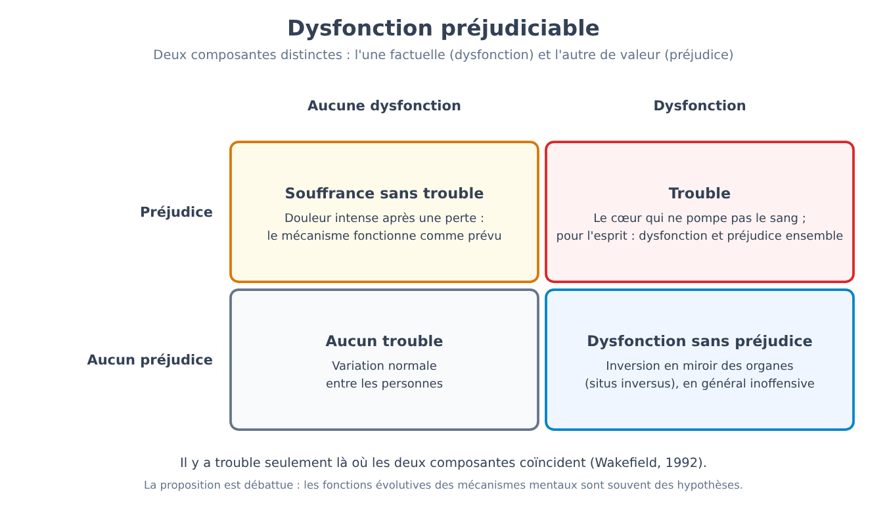
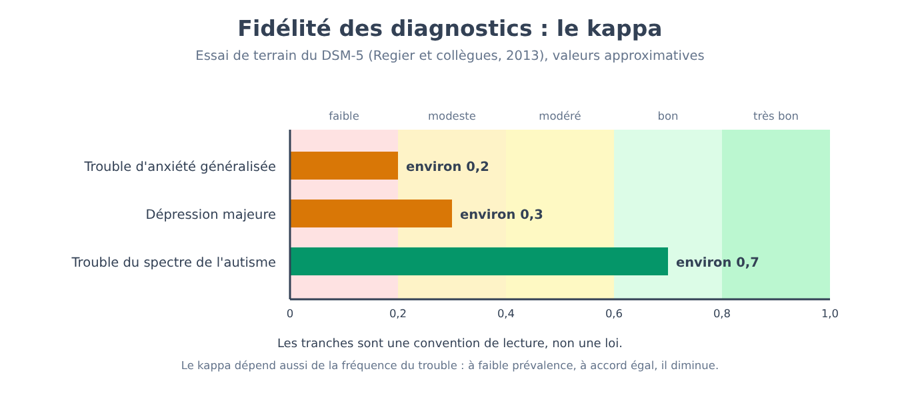
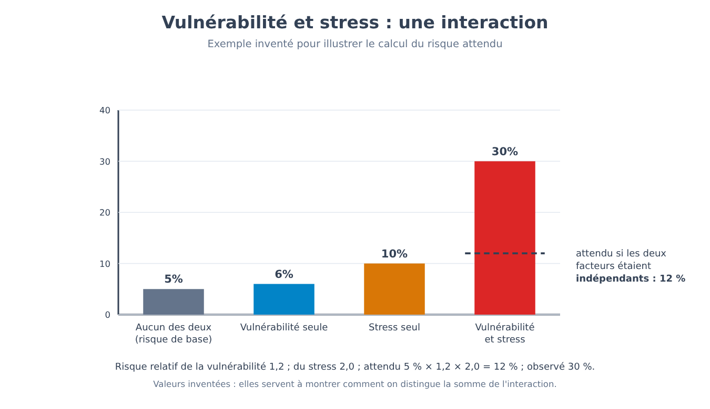
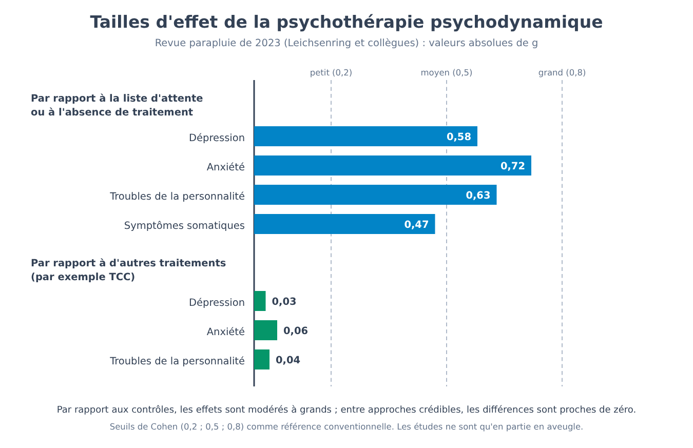
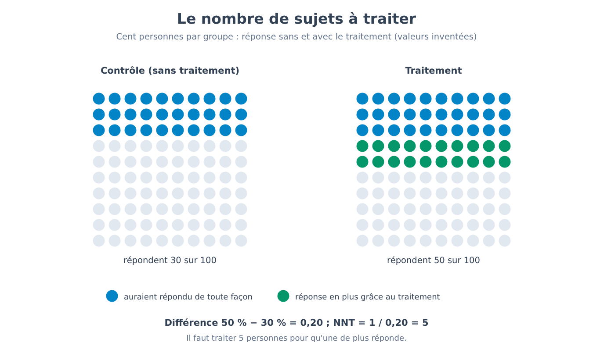
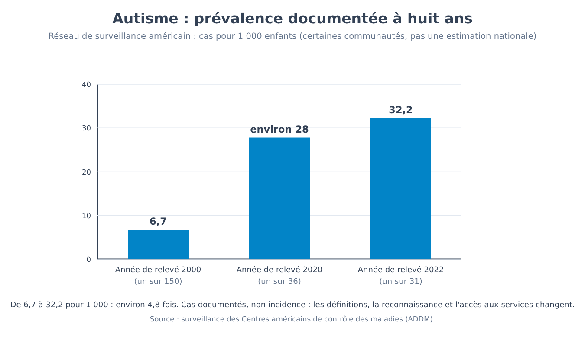

Partie XII. La souffrance psychique comme banc d'essai
Chapitre 73 — Ce qui fait d'un trouble un trouble
[EN DEUX MOTS]
Une personne est très triste depuis des semaines après la mort de son mari : souffre-t-elle d'un trouble ? Ce chapitre montre que la réponse dépend de l'endroit où l'on trace une frontière, et que les quatre façons les plus courantes de la tracer (statistique, par la souffrance, par l'atteinte fonctionnelle, par la norme sociale) ont chacune un défaut reconnaissable. Il expose la définition de l'association psychiatrique américaine et la proposition du « dysfonctionnement préjudiciable », retrace quelques frontières qui se sont déplacées et distingue deux questions que le langage courant confond : ce qui a changé dans les connaissances et ce qui a changé dans les valeurs.
La partie précédente s'est achevée sur les personnes ordinaires, et sur la manière dont la situation, le groupe et l'autorité orientent leur comportement (72 → 73). La partie qui commence ici déplace le regard vers un domaine où l'enjeu est plus élevé et les frontières plus discutées : la souffrance psychique et la façon de la classer. Il faut dire d'emblée ce que cette partie n'est pas. Ce n'est pas un manuel des troubles, elle ne décrit pas un à un les tableaux cliniques et ne dit pas comment choisir ou interrompre un traitement : pour ces décisions, il faut un professionnel et les informations sur le cas concret. C'est en revanche un banc d'essai pour la méthode du livre. Tout ce que les parties précédentes ont appris sur les mesures, les groupes de contrôle, les corrélations et les réplications est ici mis à l'épreuve sur un terrain où les mots pèsent plus qu'ailleurs, parce qu'un diagnostic change ce qu'une personne peut demander, ce que les autres attendent d'elle et ce qu'elle pense d'elle-même.
Commençons par une question à laquelle une expérience ne répond pas. Imaginez deux personnes présentant les mêmes symptômes : elles dorment mal, ont perdu l'appétit, pleurent souvent, n'arrivent pas à se concentrer. La première a perdu son mari il y a trois semaines. La seconde, sans aucun événement qu'elle sache indiquer, est dans cet état depuis trois semaines. Pendant de nombreuses années, le manuel diagnostique le plus utilisé excluait la première du diagnostic de dépression majeure : la tristesse était considérée comme une réponse compréhensible à une perte, non comme un trouble. En 2013, avec la cinquième édition, l'exclusion a été supprimée, et la discussion qui s'en est suivie entre cliniciens a été vive. Ceux qui voulaient la supprimer observaient que la souffrance de celui qui a perdu un proche peut être aussi grave et prolongée que celle d'une dépression, et qu'attendre du clinicien un jugement sur la « compréhensibilité » de la douleur est une opération difficile. Ceux qui voulaient la conserver craignaient que l'on transforme en trouble ce qu'une personne en bonne santé éprouve face à un deuil. Les deux positions ont un argument, et aucune ne se tranche par une donnée. Pour comprendre pourquoi, il faut se demander ce que nous entendons quand nous disons que quelque chose est un trouble.
Quatre façons de tracer la frontière
La réponse la plus immédiate est statistique : est un trouble ce qui est rare, ce qui s'écarte de la majorité. Elle a l'avantage d'être mesurable et un défaut qui se voit tout de suite. Beaucoup de caractéristiques rares ne sont pas des troubles : avoir une mémoire musicale exceptionnelle, mesurer plus de deux mètres, ou avoir appris à lire à trois ans. Et beaucoup de conditions fréquentes sont des maladies : les caries sont très répandues et personne ne les considère comme normales. Le critère statistique dit à quel point une caractéristique est inhabituelle, non si elle pose problème. Pour les troubles mentaux, nous verrons bientôt que les estimations de fréquence sont si élevées qu'elles rendent le critère encore moins adapté.
La deuxième réponse est la souffrance : est un trouble ce qui fait se sentir mal. C'est le critère le plus proche de l'expérience de celui qui demande de l'aide, mais il échoue dans les deux sens. On souffre sans avoir de trouble : la douleur d'un deuil, d'un licenciement, de la maladie d'un enfant est intense et fait partie de ce que nous attendons d'une vie humaine. Et l'on peut avoir un trouble sans souffrir : aux premières phases d'un épisode maniaque, une personne peut se sentir bien, pleine d'énergie et d'idées, et faire des choix qui lui coûteront cher (dépenses, relations rompues, emploi).
La troisième est l'atteinte fonctionnelle, ou incapacité : est un trouble ce qui empêche de travailler, d'étudier, d'entretenir des relations. Le critère est plus objectif que la souffrance, mais il dépend du contexte. La même caractéristique peut être un obstacle dans un environnement et passer inaperçue dans un autre : une difficulté de lecture pèse peu là où l'on lit peu et énormément là où l'école obligatoire la rend visible à tous. Il en résulte que l'atteinte fonctionnelle mesure aussi l'environnement, pas seulement la personne.
La quatrième est la norme sociale : est un trouble ce qui s'écarte de la façon dont on attend qu'une personne se comporte. Ce critère a une histoire embarrassante, car il a permis d'appeler maladie la dissidence. En 1851, un médecin américain a proposé le nom de « drapétomanie » pour désigner la tendance des esclaves à fuir, en la traitant comme un trouble ; la proposition n'est jamais entrée dans un manuel diagnostique moderne, mais elle montre jusqu'où peut aller une définition fondée sur le jugement de la société dominante. À une autre échelle, en Union soviétique, le diagnostic de « schizophrénie torpide » a été utilisé pour interner certains dissidents politiques. C'est pourquoi toute définition contemporaine tient à préciser que le seul écart par rapport aux normes ne suffit pas.
[IDÉE REÇUE]
« Il existe une ligne nette entre ceux qui sont normaux et ceux qui sont malades. » L'image est commode, mais aucun des quatre critères ne la produit : chacun trace un seuil le long d'une échelle continue (de rareté, de souffrance, d'atteinte, d'écart par rapport aux attentes), et la position du seuil dépend d'un choix. Le reste de ce chapitre, et le suivant, servent à voir comment on choisit et avec quelles conséquences.
La définition de l'association psychiatrique américaine
La définition aujourd'hui la plus citée est celle du DSM (Diagnostic and Statistical Manual of Mental Disorders), le manuel de l'association psychiatrique américaine, parvenu en 2013 à sa cinquième édition (avec une révision du texte en 2022). À côté, il y a la CIM (International Classification of Diseases), la classification de l'Organisation mondiale de la santé, dont la onzième édition est entrée en usage en 2022. Pour le DSM-5, un trouble mental (mental disorder) est un syndrome caractérisé par une perturbation cliniquement significative de la cognition, de la régulation des émotions ou du comportement, qui reflète un dysfonctionnement des processus psychologiques, biologiques ou développementaux sous-jacents au fonctionnement mental. Il est en règle générale associé à une souffrance ou à une altération du fonctionnement. La définition ajoute deux exclusions. Une réponse attendue ou culturellement acceptée à un événement courant, comme la mort d'un proche, n'est pas un trouble. Et un comportement socialement déviant (politique, religieux, sexuel), ou un conflit qui concerne surtout le rapport entre la personne et la société, n'est pas un trouble, à moins qu'il ne soit la conséquence d'un dysfonctionnement.
La définition rassemble plusieurs critères, à savoir la souffrance, l'atteinte fonctionnelle et le dysfonctionnement, et les protège par les deux exclusions contre les défauts du critère statistique et du critère social. Reste toutefois une difficulté de fond : elle dit qu'il y a un dysfonctionnement des processus mentaux, mais pour la plupart des troubles nous ne savons ni quels processus sont en défaut, ni quel est leur fonctionnement normal. Le manuel lui-même admet, en substance, qu'aucune définition ne spécifie de frontières précises.
Une tentative de rendre plus rigoureuse la notion de dysfonctionnement est celle de Jerome Wakefield (1992), qui a proposé de définir un trouble comme un dysfonctionnement préjudiciable (harmful dysfunction). La proposition comporte deux composantes. La première est factuelle : un mécanisme mental n'accomplit pas la fonction pour laquelle il s'est formé au cours de l'évolution. La seconde est de valeur : l'échec de ce mécanisme cause un préjudice, jugé tel selon les valeurs sociales. L'avantage est que les deux composantes se séparent et peuvent être discutées l'une après l'autre, comme on le voit avec un exemple tiré du corps. Un cœur qui ne pompe pas le sang est un cas où dysfonctionnement et préjudice se présentent ensemble, et c'est une maladie. Une inversion en miroir des organes internes (situs inversus), qui ne cause normalement aucun problème, est un cas de dysfonctionnement sans préjudice : l'anatomie est inhabituelle, mais personne n'en souffre. Sur le versant opposé, la souffrance intense après une perte est un préjudice sans dysfonctionnement : le mécanisme émotionnel fait ce pour quoi il est fait, et c'est pourquoi, selon Wakefield, ce n'est pas un trouble.

[QUESTION CONTROVERSÉE]
La proposition a trouvé de nombreux critiques, et les objections sont de trois types. La première est que les fonctions évolutives des mécanismes mentaux ne sont pas connues avec la précision qui serait nécessaire : dire qu'un mécanisme « ne fonctionne pas comme il le devrait » suppose de savoir à quoi il a été sélectionné, et pour beaucoup de fonctions psychologiques les reconstitutions sont des hypothèses et non des faits. La deuxième est que le jugement de dysfonctionnement peut contenir des valeurs sans les déclarer : si l'on considère comme « dysfonctionnement » ce qui ne sert pas à s'adapter à un certain environnement, on porte déjà un jugement sur cet environnement. La troisième est pratique : un clinicien doit décider s'il propose une aide même dans des cas où la distinction entre préjudice et dysfonctionnement ne peut être établie, et une définition qui ne permet pas de décider a une valeur limitée pour la pratique. Les défenseurs de la proposition répliquent que le critère sert à raisonner sur les frontières, non à résoudre chaque cas, et que la séparation entre fait et valeur est utile précisément parce qu'elle oblige à dire laquelle des deux composantes est en discussion.
Les frontières se sont déplacées
Les frontières des manuels ne sont pas restées fixes. On peut observer quelques déplacements et se demander, pour chacun, ce qui a changé.
| Cas | Ce qui a changé | Ce qui a pesé |
|---|---|---|
| Homosexualité (1973–1990) | Le conseil d'administration de l'association psychiatrique américaine l'a retirée du DSM-II en 1973 ; un diagnostic lié à la détresse face à sa propre orientation est resté dans le DSM-III et a été supprimé comme tel dans le DSM-III-R (1987) ; l'OMS l'a retirée de la CIM en 1990 | Critiques internes et externes, confrontation aux données, évolution des normes sociales |
| Deuil (2013, 2022) | Le DSM-5 a supprimé l'exclusion du deuil de la dépression majeure ; le DSM-5-TR a introduit un trouble du deuil prolongé (après au moins douze mois chez l'adulte, six dans la CIM-11) | Données sur l'évolution, débat sur le risque de médicalisation, besoin de services |
| Jeu d'argent (2013) | Le DSM-5 l'a déplacé des troubles du contrôle des impulsions aux troubles addictifs ; la CIM-11 inclut aussi un trouble du jeu vidéo | Ressemblances avec les addictions, discussion sur le seuil entre usage intense et trouble |
| Drapétomanie (1851) et schizophrénie torpide (URSS) | Étiquettes utilisées pour pathologiser la fuite ou la dissidence ; la première n'a jamais été accueillie dans une classification moderne | Norme sociale utilisée comme critère, usage politique des diagnostics |
Le tableau montre que les frontières se déplacent pour au moins trois raisons distinctes. Parfois les connaissances changent (données sur l'évolution, sur les ressemblances entre conditions). Parfois ce sont les valeurs et les normes d'une société qui changent (ce qui est toléré, ce que l'on considère comme un préjudice). Et parfois des exigences pratiques comptent, comme l'accès aux services, la couverture d'assurance, les besoins de la recherche ou du droit. Les trois raisons se présentent d'ordinaire mêlées, et les séparer cas par cas demande un travail de reconstitution historique. Le retrait de l'homosexualité du DSM, en particulier, est un exemple où la confrontation aux données et la contestation sociale ont compté ensemble, et il nous rappelle que la science classificatoire ne se déroule pas dans un lieu séparé de la société.
[ATTENTION AU SAUT LOGIQUE]
Du fait que les frontières diagnostiques se soient déplacées dans le temps, il ne s'ensuit ni qu'elles soient arbitraires, ni que les troubles ne soient « que » des constructions sociales. En médecine, les frontières se déplacent sans cesse sans que les maladies deviennent des inventions : en 2017, les recommandations cardiologiques américaines ont abaissé à 130/80 mmHg le seuil de pression artérielle qui définit l'hypertension de stade 1, et la raison était que de nouvelles données montraient un risque déjà élevé à des valeurs plus basses. Un seuil peut se déplacer parce que l'on en sait davantage sur le risque et sur le bénéfice d'intervenir. Pour les troubles mentaux, la différence tient au fait qu'il manque souvent un indicateur mesurable indépendant du syndrome (comme la pression ou la glycémie), et donc que le seuil repose surtout sur des jugements cliniques et sociaux. C'est une difficulté réelle, mais cela ne veut pas dire qu'il n'y ait rien à expliquer derrière la souffrance.
Quelle est l'étendue de la frontière
Pour saisir l'importance de ces choix, il suffit de regarder combien de personnes entrent dans les définitions. La prévalence (prevalence) est la proportion d'une population qui présente une condition pendant une période donnée : la prévalence « sur la dernière année » compte ceux qui la présentent au cours de ces douze mois, celle « sur la vie entière » compte ceux qui l'ont présentée au moins une fois. Les estimations de prévalence sur la vie entière obtenues par entretiens structurés sont élevées : aux États-Unis, environ 46 % de la population remplit, à un moment ou à un autre, les critères d'au moins un trouble, et dans de nombreux pays les estimations dépassent une personne sur trois. Dans l'étude de Dunedin du chapitre 60, suivie jusqu'à 38 ans, l'estimation publiée (Schaefer et collègues, 2017) indique que la grande majorité des participants, plus de 80 %, avait reçu au moins un diagnostic à un moment ou à un autre.
Comment lire ces chiffres ? Il y a au moins trois lectures, qui ne s'excluent pas. La première est que la souffrance psychique soit très répandue et qu'elle ait été sous-estimée pendant des années. La seconde est que les seuils soient si bas qu'ils incluent une partie de la variation normale de l'expérience humaine : un épisode de deux semaines à dix-neuf ans, passé et surmonté, compte dans l'estimation « sur la vie entière » autant qu'un trouble qui dure depuis des décennies. La troisième est que le sens même des concepts liés au préjudice se soit élargi avec le temps, un phénomène que Nick Haslam (2016) a appelé concept creep. Il faut aussi noter que la part des cas graves et persistants est bien plus petite que la part globale : les pourcentages élevés comptent surtout des épisodes légers ou transitoires. Laquelle de ces lectures l'emporte est une question ouverte, et c'est une bonne raison de se méfier de ceux qui citent ces pourcentages pour soutenir une seule des trois.
La frontière, donc, ne peut être ni ignorée ni prise pour une donnée de nature. Savoir où elle se trouve exige de savoir comment a été construite la liste qui la trace, et de se demander si les catégories de cette liste correspondent à des unités réelles ou à des conventions utiles (73 → 74). Un cas où la discussion sur la frontière a touché une catégorie entière, avec la voix des personnes concernées, est celui de l'autisme (73 → 77).
[CHIFFRES]
• États-Unis : environ 46 % de la population remplit les critères d'au moins un trouble sur la vie entière ; dans de nombreux pays, l'estimation dépasse une personne sur trois.
• Dunedin (988 personnes évaluées à 38 ans) : selon l'estimation publiée, environ 83 % ont reçu au moins un diagnostic sur la vie entière.
• Seuil de l'hypertension de stade 1 : de 140/90 à 130/80 mmHg dans les recommandations américaines de 2017 (exemple tiré de la médecine d'une frontière déplacée par de nouvelles données).
• Deuil : exclusion supprimée dans le DSM-5 (2013) ; trouble du deuil prolongé introduit dans le DSM-5-TR (2022), après au moins douze mois chez l'adulte.
[MINI-CHRONOLOGIE]
• 1851 : proposition de la « drapétomanie », jamais entrée dans une classification moderne.
• 1973 : l'homosexualité est retirée du DSM-II.
• 1980 : le DSM-III introduit des critères diagnostiques explicites (chapitre 74).
• 1987 : suppression du dernier diagnostic lié à l'orientation sexuelle (DSM-III-R).
• 1990 : l'OMS adopte la CIM-10, sans l'homosexualité.
• 1992 : Wakefield propose le « dysfonctionnement préjudiciable ».
• 2013 : DSM-5, sans l'exclusion du deuil.
• 2022 : DSM-5-TR et CIM-11.
[L'ESSENTIEL DU CHAPITRE]
• Les quatre façons les plus courantes de tracer la frontière (rare, douloureux, invalidant, socialement déviant) échouent chacune d'une manière reconnaissable : on peut souffrir sans avoir de trouble et en avoir un sans souffrir ; ce qui est fréquent peut être un problème et ce qui est rare peut ne pas en être un.
• La définition du DSM-5 combine souffrance, altération et dysfonctionnement des processus mentaux et exclut les réponses attendues à des événements courants et la seule dissidence sociale ; sa faiblesse est que, pour de nombreux troubles, nous ne savons pas quel processus est dysfonctionnel.
• La proposition du dysfonctionnement préjudiciable (Wakefield, 1992) sépare une composante de fait (un mécanisme qui ne fait pas ce pour quoi il s'est formé) et une composante de valeur (le préjudice) ; elle est utile pour raisonner et discutée dans ses prémisses évolutives.
• Les frontières se sont déplacées sous l'effet de changements de connaissances, de valeurs et d'exigences pratiques, mêlés entre eux ; un déplacement ne rend pas une catégorie arbitraire, comme le montre l'hypertension.
• Les estimations de prévalence sur la vie entière sont très élevées (environ 46 % aux États-Unis), et peuvent se lire comme une souffrance sous-estimée, des seuils bas ou un élargissement des concepts ; il n'existe pas encore de moyen de choisir entre ces lectures.
Chapitre 74 — Comment se construit une classification
[EN DEUX MOTS]
Un diagnostic est une étiquette qu'une classification attribue à une personne ; il vaut ce que vaut la classification. Ce chapitre expose comment se mesurent ses deux qualités fondamentales : la fiabilité (deux cliniciens arrivent-ils à la même étiquette ?) et la validité (l'étiquette correspond-elle à quelque chose de réel ?). Il montre par deux calculs ce que signifient un kappa faible et « deux cent vingt-sept façons » de satisfaire la même catégorie, présente la comorbidité et le facteur p, et compare les trois façons dont on propose aujourd'hui de changer la liste (dimensions, domaines de fonctionnement, réseaux de symptômes).
Le chapitre précédent a montré que la frontière entre ce qui est et ce qui n'est pas un trouble peut être tracée de plusieurs façons (73 → 74). Ce chapitre s'occupe de l'étape suivante, moins visible et tout aussi importante : une fois établi qu'il existe des troubles, comment construit-on la liste qui les nomme ? Une liste de ce type sert à de nombreuses choses. Elle permet aux cliniciens de se comprendre entre eux, aux chercheurs d'étudier des groupes comparables, aux services de décider qui a accès à quoi, et, du moins dans les intentions, elle aide à prévoir l'évolution d'une condition et à choisir une intervention. Toutes ces fonctions n'exigent pas que les catégories correspondent à des unités présentes dans la nature. Comme l'ont souligné Robert Kendell et Assen Jablensky (2003), une liste peut être utile même si ses catégories ne sont pas valides au sens fort, de même qu'une carte routière est utile sans reproduire chaque détail du terrain. La distinction entre utilité et validité est le fil conducteur de tout le chapitre.
Pour ces deux qualités, nous utiliserons des concepts déjà rencontrés au chapitre 3. La fiabilité (la cohérence d'une mesure) s'applique au diagnostic sous la forme de la fiabilité inter-évaluateurs (inter-rater reliability) : si deux cliniciens examinent la même personne, indépendamment, à quelle fréquence arrivent-ils à la même étiquette ? La validité (dans quelle mesure une mesure saisit ce qu'elle dit saisir) s'applique dans la question : la catégorie identifie-t-elle un groupe de personnes qui ont quelque chose de vrai en commun, au-delà du fait d'avoir été nommées de la même façon ?
Quand deux cliniciens ne sont pas d'accord
Pendant des décennies, la réponse à la première question a été gênante. Un exemple est la comparaison entre les hôpitaux de New York et de Londres menée au début des années 1970 (Cooper et collègues, 1972) : les patients hospitalisés présentant un tableau similaire recevaient le diagnostic de schizophrénie beaucoup plus souvent à New York qu'à Londres, tandis qu'à Londres ils étaient plus souvent classés parmi les troubles de l'humeur. Quand une équipe de recherche a appliqué aux deux hôpitaux le même entretien standardisé et les mêmes critères, la différence s'est beaucoup réduite. Le résultat suggérait que ce ne sont pas les patients qui différaient, mais les habitudes diagnostiques locales. Les psychiatres d'un groupe de l'université Washington à Saint-Louis (Feighner et collègues, 1972) ont alors proposé des critères explicites pour un nombre limité de troubles, et cette voie a conduit à la troisième édition du DSM (1980), qui a abandonné les descriptions générales au profit de listes de critères et de seuils. Depuis, la liste diagnostique a la forme que nous connaissons, et c'est précisément pour cela qu'il est possible de compter à quelle fréquence deux cliniciens s'accordent.
Un épisode souvent cité dans cette histoire est l'étude de Rosenhan, qui montre bien à la fois la question et la prudence avec laquelle il faut la traiter.
[LE PLAN DE L'EXPÉRIENCE]
Dans l'étude de David Rosenhan (1973), publiée sous le titre « On being sane in insane places », huit personnes sans antécédents de troubles psychiatriques se sont présentées dans douze hôpitaux de cinq États américains en disant entendre des voix du même sexe qui semblaient prononcer des mots comme « vide », « creux », « bruit sourd ». Après l'admission, elles ont cessé de rapporter des symptômes et se sont comportées normalement. Toutes ont été hospitalisées : sept avec un diagnostic de schizophrénie, une avec un diagnostic de psychose maniaco-dépressive. Elles sont restées à l'hôpital de 7 à 52 jours (19 en moyenne), et ont reçu leur congé avec le diagnostic de schizophrénie « en rémission ». Aucune n'a été reconnue comme imposteur par le personnel, alors qu'une partie des patients hospitalisés soupçonnait qu'elles étaient en bonne santé (35 sur 118 lors des trois premières hospitalisations). Dans une seconde partie, un hôpital a été prévenu que, dans les trois mois suivants, de faux patients se présenteraient : le personnel a jugé 41 des 193 nouveaux patients comme imposteurs probables et 42 autres comme suspects, mais Rosenhan n'avait envoyé personne. Conclusion de l'auteur : dans un hôpital psychiatrique, les diagnostics ne distinguent pas de manière fiable les personnes saines des malades.
[TIENT-ON ENCORE ?]
Comme démonstration, l'étude ne tient pas. Robert Spitzer (1975) a objecté que les diagnostics dépendent en grande partie de ce que le patient rapporte, et que la supercherie n'en dit pas plus sur la psychiatrie qu'elle n'en dirait sur un médecin à propos d'un patient qui simulerait de vive voix un symptôme dont aucun examen ne peut établir l'absence ; et que le personnel avait de bonnes raisons de ne pas soupçonner une tromperie. Plus grave est la reconstitution faite par la journaliste Susannah Cahalan (2019), qui a examiné les documents conservés après la mort de l'auteur : elle a trouvé des incohérences entre les données et le texte publié, des citations inexactes par rapport aux dossiers cliniques, n'a réussi à identifier que deux des huit pseudo-patients et s'est demandé si les six autres avaient existé. D'autres chercheurs ont jugé le tableau compatible avec une fraude (Scull, 2023). Ce qui reste, c'est la question que l'étude avait posée, non la réponse : un diagnostic posé dans un hôpital, par un clinicien qui dispose de peu d'informations et de peu de temps, dans quelle mesure peut-il être considéré comme une donnée ? Pour répondre, il faut des mesures de l'accord, c'est-à-dire exactement ce qui suit.
Comment on mesure l'accord
Si deux cliniciens examinent cent personnes et donnent la même réponse (trouble présent ou absent) dans soixante-quinze cas, ils ont un accord de 75 %. Mais une partie de cet accord s'obtiendrait aussi en tirant à pile ou face, et son importance dépend de la fréquence à laquelle on dit « oui ». Le kappa de Cohen (Cohen's kappa) corrige l'accord observé par l'accord attendu par hasard.
[FORMULE]
κ = (p₀ − pₑ) / (1 − pₑ)
Où :
• κ (kappa) est l'indice d'accord, qui vaut 1 en cas d'accord parfait, 0 avec un accord égal à celui attendu par hasard et des valeurs négatives avec un accord inférieur au hasard ;
• p₀ est la proportion observée de cas où les deux évaluateurs donnent la même réponse ;
• pₑ est la proportion d'accord attendu par hasard : la somme des produits des fréquences avec lesquelles chaque évaluateur a donné cette réponse (la probabilité que les deux disent « oui » par hasard, plus la probabilité que les deux disent « non ») ;
• 1 − pₑ est l'accord maximal possible au-delà du hasard.
Exemple de calcul. Sur 100 personnes, les deux cliniciens disent tous deux « oui » dans 40 cas, tous deux « non » dans 35, et sont en désaccord dans les 25 restants (le premier dit oui et le second non dans 10 cas, l'inverse dans 15). L'accord observé est p₀ = (40 + 35) / 100 = 0,75. Le premier clinicien dit « oui » dans 50 % des cas (40 + 10), le second dans 55 % (40 + 15), donc pₑ = 0,50 × 0,55 + 0,50 × 0,45 = 0,275 + 0,225 = 0,50. Alors κ = (0,75 − 0,50) / (1 − 0,50) = 0,50. Un accord observé de 75 % correspond à un kappa de 0,50, c'est-à-dire à mi-chemin entre le hasard et l'accord parfait.
Pour lire les valeurs, on utilise une convention, non une loi : au-dessus de 0,8, l'accord est considéré comme très bon, entre 0,6 et 0,8 comme bon, entre 0,4 et 0,6 comme modéré, entre 0,2 et 0,4 comme modeste, en dessous de 0,2 comme faible. Dans les essais de terrain du DSM-5, qui ont précédé la publication du manuel en 2013 (Regier et collègues, 2013), différents cliniciens ont évalué les mêmes patients à des moments différents dans des centres américains et canadiens, et le kappa s'est révélé bon pour le trouble du spectre de l'autisme (environ 0,7), mais beaucoup plus bas pour la dépression majeure (environ 0,3) et pour le trouble d'anxiété généralisée (environ 0,2). Ce résultat a été très discuté. Ceux qui y voyaient un échec de la classification observaient que les diagnostics les plus fréquents dans la pratique étaient justement parmi les moins fiables. Ceux qui le défendaient faisaient remarquer que le plan prévoyait deux évaluations à des moments différents, et incluait donc aussi les véritables changements des symptômes entre une consultation et l'autre, et que dans les recherches avec entretiens structurés et cliniciens formés les valeurs sont en général plus élevées.

[ATTENTION AU SAUT LOGIQUE]
Un kappa faible ne signifie pas que les cliniciens se trompent souvent : il dépend aussi de la fréquence du trouble. Si la condition concerne 5 % des personnes et que les deux cliniciens sont d'accord dans 95 % des cas, l'accord attendu par hasard est déjà très élevé (pₑ = 0,05 × 0,05 + 0,95 × 0,95 = 0,905), et κ = (0,95 − 0,905) / (1 − 0,905) ≈ 0,47. Le même accord de 95 % donnerait κ = 0,90 si la condition concernait la moitié des personnes (pₑ = 0,50). Le kappa est un bon indicateur pour comparer des conditions de fréquence similaire, et il se lit à côté du pourcentage d'accord et de la fréquence. De plus, une forte fiabilité ne prouve pas la validité : deux cliniciens peuvent toujours être d'accord sur une catégorie qui ne correspond à rien de réel.
Ce que voudrait dire qu'une catégorie est valide
[IDÉE REÇUE]
« Un trouble psychiatrique se constate comme une fracture : il y a un examen qui le confirme. » Pour la grande majorité des troubles mentaux, il n'existe pas d'examen de laboratoire ou d'imagerie qui établisse le diagnostic : celui-ci repose sur l'entretien, l'observation et l'application de critères. Ce n'est pas un cas isolé en médecine (la migraine et de nombreuses formes de douleur chronique se diagnostiquent de la même façon), mais cela a une conséquence : la validité ne peut être vérifiée par une confirmation externe et doit être construite avec d'autres arguments.
La seconde qualité est plus difficile à mesurer. En 1970, Eli Robins et Samuel Guze ont proposé cinq critères pour démontrer la validité d'un diagnostic psychiatrique : une description clinique précise, des études de laboratoire qui la distinguent, une délimitation par rapport à d'autres troubles, des études d'évolution dans le temps et des études sur les familles. L'idée est qu'une catégorie valide se comporte comme une maladie bien définie : elle a un tableau reconnaissable, une évolution prévisible, une distribution familiale et, si possible, un corrélat biologique. Pour très peu de troubles psychiatriques on dispose de tous ces éléments, et presque aucun diagnostic n'a d'examen de laboratoire qui l'identifie.
Kendell et Jablensky (2003) proposent un critère plus strict pour la validité au sens fort : une catégorie est valide s'il existe un « point de rareté » entre elle et les catégories voisines, c'est-à-dire si, entre les cas typiques d'un trouble et ceux d'un autre, ou entre les cas et les non-cas, il y a un vide dans la distribution des personnes. Si au contraire les personnes se distribuent avec continuité, le long d'une échelle de gravité, sans lacunes, il n'existe pas de frontières naturelles, et les seuils sont des conventions. L'analyse taxométrique (taxometric analysis) est un ensemble de méthodes statistiques qui pose précisément cette question : les scores se disposent-ils en deux groupes séparés, ou sur un continuum ? Une revue de nombreuses études de ce type (Haslam et collègues, 2012) a conclu que, pour la plupart des construits psychopathologiques examinés, la structure se révélait dimensionnelle, non en groupes. Il en découle une conséquence pratique : si la structure est continue, la question « à quel point déprimé ?» a plus de sens que « déprimé, oui ou non ?», et un seuil est une manière de décider où intervenir, non la limite d'une espèce.
Une catégorie, deux cent vingt-sept façons de la satisfaire
Un deuxième problème concerne l'homogénéité. Pour le diagnostic d'épisode dépressif majeur, le DSM-5 exige cinq critères sur neuf, dont au moins un parmi deux (humeur dépressive, ou perte d'intérêt ou de plaisir) ; les neuf comprennent des altérations du sommeil, de l'appétit, de la concentration, de la fatigue, du sentiment de culpabilité, de l'activité motrice, et des pensées de mort. Combien de combinaisons différentes satisfont la règle ? On compte les choix d'au moins cinq critères sur neuf, et l'on retire ceux qui n'incluent aucun des deux critères principaux.
[FORMULE]
N = Σ(k = 5…9) C(9, k) − Σ(k = 5…7) C(7, k)
Où :
• N est le nombre de combinaisons de critères qui satisfont la règle ;
• C(n, k) (coefficient binomial) est le nombre de façons de choisir k éléments parmi n sans tenir compte de l'ordre, égal au produit n × (n − 1) × … × (n − k + 1) divisé par le produit k × (k − 1) × … × 1 (par exemple C(9, 5) = (9 × 8 × 7 × 6 × 5) / (5 × 4 × 3 × 2 × 1) = 126) ;
• la première somme compte les façons de choisir de cinq à neuf critères parmi les neuf disponibles ;
• la seconde somme compte les façons de choisir de cinq à sept critères parmi les seuls sept qui ne sont pas les deux principaux : ce sont les combinaisons à exclure, parce qu'elles ne contiennent ni l'humeur dépressive ni la perte d'intérêt.
Exemple de calcul. Première somme : C(9,5) + C(9,6) + C(9,7) + C(9,8) + C(9,9) = 126 + 84 + 36 + 9 + 1 = 256. Seconde somme : C(7,5) + C(7,6) + C(7,7) = 21 + 7 + 1 = 29. Donc N = 256 − 29 = 227. Si l'on tient compte du fait que certains critères sont doubles (insomnie ou hypersomnie, agitation ou ralentissement), les combinaisons distinctes sont encore plus nombreuses.
La conséquence est que, selon la liste des neuf critères, deux personnes ayant le même diagnostic peuvent n'avoir qu'un seul critère en commun. Ce n'est pas une abstraction. Eiko Fried et Randolph Nesse (2015) ont examiné les symptômes de 3 703 patients atteints de dépression majeure entrés dans une grande étude de traitement (l'étude STAR*D du chapitre 22), et y ont dénombré 1 030 profils de symptômes différents. Le résultat ne démontre pas que la dépression n'existe pas, mais indique que l'étiquette regroupe des tableaux très différents entre eux, ce qui peut contribuer à expliquer pourquoi, pour les traitements et pour les causes biologiques, on trouve souvent une efficacité moyenne modeste, avec de larges différences entre individus (chapitre 22).
Comorbidité : une personne, plusieurs étiquettes
Un troisième problème est la comorbidité (comorbidity) : la présence, chez la même personne, de plus d'un diagnostic. Dans les enquêtes en population et en clinique, une part importante des personnes ayant un diagnostic en ont aussi d'autres. Si les catégories correspondaient à des maladies distinctes, une comorbidité aussi élevée serait surprenante. Les explications proposées sont au moins au nombre de quatre, et ne s'excluent qu'en partie. Les critères se chevauchent : la difficulté de concentration ou les troubles du sommeil apparaissent dans de nombreuses listes, et deux diagnostics peuvent partager des éléments. Il peut y avoir des facteurs de risque communs, génétiques ou environnementaux (74 → 75). La classification peut découper trop finement un continuum. Enfin, un trouble peut en causer un autre.
Une façon de lire la comorbidité consiste à chercher la structure qui se trouve sous les étiquettes. Dans l'étude de Dunedin (le chapitre 60), Avshalom Caspi et collègues (2014) ont analysé statistiquement les diagnostics des participants suivis de 18 à 38 ans. Le modèle qui décrivait le mieux les données comprenait trois dimensions (internalisation : dépression et anxiété ; externalisation : comportements antisociaux et usage de substances ; trouble de la pensée : symptômes psychotiques) et, au-dessus d'elles, un facteur général que les auteurs ont appelé facteur p (p factor). Des scores plus élevés sur le facteur p s'associaient à une plus grande altération de la vie, à davantage de troubles dans la famille, à une histoire développementale plus difficile et à un moins bon fonctionnement cérébral précoce. L'analogie avec le facteur g de l'intelligence (chapitre 64) est délibérée : comme la « positive manifold » des épreuves cognitives, les diagnostics sont positivement corrélés entre eux. Et la même prudence qu'alors s'applique : un facteur statistique résume une corrélation, il ne démontre pas une cause unique. Le facteur p pourrait refléter une vulnérabilité commune, mais aussi des éléments partagés entre les mesures ou le chevauchement des critères, et la recherche est en cours.
Trois propositions pour changer la liste
Face à ces problèmes, des alternatives ont été proposées. Elles ne s'excluent pas, et chacune répond à une difficulté différente.
La première est dimensionnelle. La taxonomie hiérarchique de la psychopathologie (HiTOP, Hierarchical Taxonomy of Psychopathology; Kotov et collègues, 2017) organise les symptômes en dimensions continues, regroupées en sous-facteurs puis en spectres plus larges (comme l'internalisation et l'externalisation), d'après la façon dont les symptômes varient ensemble dans les populations. Elle ne produit pas de diagnostics oui/non, mais des profils ; elle est plus fidèle à la structure statistique des données, et moins simple à utiliser dans les services, où il faut souvent décider si une personne entre ou non dans un parcours.
La deuxième part de la fonction, non des symptômes. Le programme américain des critères de domaine de la recherche (RDoC, Research Domain Criteria; lancé par l'institut national de la santé mentale à partir de 2009-2010) propose à la recherche d'étudier des domaines de fonctionnement (par exemple le système de la peur, de la récompense, les processus cognitifs, les processus sociaux) à plusieurs niveaux, des gènes au comportement, indépendamment des catégories diagnostiques. Le pari est que les mécanismes, une fois compris, redessineront les catégories. Les critiques sont que le cadre a produit, pour l'instant, davantage une grille pour organiser les études que de nouveaux traitements, et qu'il néglige une partie de l'expérience clinique.
La troisième est l'approche en réseaux (network approach; Borsboom et Cramer, 2013) : un trouble n'est pas la manifestation d'une cause commune, comme une infection qui provoque les symptômes, mais un ensemble de symptômes qui se renforcent mutuellement (une insomnie produit de la fatigue, la fatigue rend difficile la concentration, l'échec de la concentration produit de l'inquiétude, et ainsi de suite), de sorte que le trouble coïncide avec un réseau qui se maintient stable. Elle a le mérite de déplacer l'attention vers les symptômes et leurs relations. Il faut rappeler que les réseaux estimés avec des données recueillies une seule fois montrent des associations, non des liens causaux : pour soutenir qu'un symptôme en cause un autre, il faut des études dans le temps ou des interventions, selon les critères du chapitre 4.
[QUESTION CONTROVERSÉE]
Le débat entre catégories et dimensions n'est pas seulement académique. Ceux qui défendent les catégories observent qu'en clinique et dans les services on doit de toute façon décider (traiter ou ne pas traiter, hospitaliser ou suivre à domicile), et que les étiquettes sont un langage commun et ont souvent une valeur pratique même lorsqu'elles ne sont pas valides au sens fort. Ceux qui préfèrent les dimensions observent que les catégories donnent l'impression de frontières qui n'existent pas, et font perdre de l'information sur ceux qui se trouvent juste sous le seuil. La position la plus répandue, aujourd'hui, est que les seuils servent à décider et non à découvrir, et que les deux perspectives peuvent coexister (par exemple avec des spectres en recherche et des catégories en clinique). Mais un point reste ouvert : nous ne savons pas encore si les mécanismes biologiques des troubles correspondent à des catégories, à des dimensions ou à autre chose.
Construits, étiquettes et le risque de prendre les uns pour des choses
Tout cela rappelle ce qui a été dit au chapitre 3 sur les construits : la « dépression » est un construit, c'est-à-dire un concept introduit pour organiser des observations, non quelque chose que l'on trouve dans la tête comme un objet. La réification (reification) est l'erreur qui consiste à traiter un construit comme une chose : dire qu'une personne « a la dépression » comme si elle avait un virus, et chercher la lésion correspondante. Cela ne signifie pas que les construits soient inutiles (la température et l'intelligence sont des construits), mais que la question de savoir s'ils correspondent à des entités distinctes doit être posée, et ne se résout pas en leur donnant un nom.
Il y a une seconde différence, qui distingue les catégories de personnes de celles de choses. Le philosophe Ian Hacking (1995) a appelé effet de boucle (looping effect) le fait que classer les personnes change les personnes classées : celui qui reçoit une étiquette peut s'y reconnaître, changer ce qu'il attend de lui-même, chercher d'autres personnes portant la même étiquette ou la refuser, et la façon dont les personnes se comportent remodèle à son tour la catégorie. Un minéral ne réagit pas au fait d'être classé ; une personne, si. Il en découle qu'une catégorie diagnostique est une cible mouvante, et qu'il n'est pas toujours possible de séparer le tracé de la catégorie de l'histoire des personnes qui y ont été placées (74 → 77).
[CHIFFRES]
• Rosenhan (1973) : 8 pseudo-patients, 12 hôpitaux, 7–52 jours d'hospitalisation (19 en moyenne) ; seconde partie : 193 patients évalués, 41 jugés imposteurs, 42 suspects, aucun faux patient envoyé. Données mises en doute par Cahalan (2019).
• Essais de terrain du DSM-5 (2013) : kappa d'environ 0,7 pour le spectre de l'autisme, d'environ 0,3 pour la dépression majeure, d'environ 0,2 pour le trouble d'anxiété généralisée.
• Kappa de l'exemple : accord 75 %, κ = 0,50 ; avec une prévalence de 5 % et un accord de 95 %, κ ≈ 0,47.
• Dépression majeure : 227 combinaisons de critères satisfont la règle « cinq sur neuf, dont l'un des deux principaux » ; chez 3 703 patients, 1 030 profils de symptômes différents (Fried et Nesse, 2015).
[MINI-CHRONOLOGIE]
• 1970 : Robins et Guze proposent cinq critères de validation.
• 1972 : comparaison New York-Londres (Cooper et collègues) ; critères de Feighner.
• 1973 : étude de Rosenhan.
• 1980 : DSM-III et les critères diagnostiques explicites.
• 1995 : Hacking décrit l'effet de boucle.
• 2003 : Kendell et Jablensky distinguent validité et utilité.
• 2013 : DSM-5 et essais de terrain ; Borsboom et Cramer proposent l'approche en réseaux.
• 2014 : Caspi et collègues, facteur p.
• 2017 : HiTOP.
[L'ESSENTIEL DU CHAPITRE]
• Une classification peut être utile sans être valide au sens fort ; les deux qualités se mesurent de façons différentes et doivent être tenues séparées (Kendell et Jablensky, 2003).
• La fiabilité inter-évaluateurs se mesure avec le kappa, qui corrige l'accord par le hasard : avec un accord de 75 % et des fréquences de 50 % et 55 %, κ = 0,50 ; dans les essais de terrain du DSM-5, le kappa a été d'environ 0,7 pour l'autisme, d'environ 0,3 pour la dépression majeure et d'environ 0,2 pour l'anxiété généralisée.
• Le kappa dépend aussi de la fréquence du trouble : à accord égal (95 %), il peut valoir 0,47 avec une prévalence de 5 % et 0,90 avec une prévalence de 50 %.
• La dépression majeure peut être diagnostiquée selon 227 combinaisons de critères et, dans les données réelles, plus de mille profils différents apparaissent : la même étiquette regroupe des tableaux très hétérogènes.
• La comorbidité élevée et le facteur p (Caspi et collègues, 2014) font penser à une structure sous-jacente plus continue et plus générale que les catégories ; le facteur p est un résumé statistique, non une cause démontrée.
• HiTOP (dimensions), RDoC (domaines de fonctionnement) et réseaux de symptômes sont trois propositions de réforme qui répondent à des problèmes différents ; aucune n'a remplacé la liste.
• Classer des personnes diffère de classer des choses : l'étiquette change celui qui la reçoit et les catégories changent avec le temps (effet de boucle).
Chapitre 75 — Modèles explicatifs
[EN DEUX MOTS]
Pourquoi une personne développe-t-elle un trouble et une autre, élevée dans les mêmes conditions, non ? Les réponses se situent à des niveaux différents (gènes, expériences, pensées, cerveau, contexte) et aucun n'a, pour l'instant, un droit de priorité. Ce chapitre expose le modèle vulnérabilité-stress avec le cas instructif du gène du transporteur de la sérotonine, les modèles cognitifs, les modèles biologiques avec ce qu'ont trouvé les études génétiques sur l'ensemble du génome, et montre pourquoi « à quel niveau faut-il chercher l'explication » est une question encore ouverte.
Deux frères grandissent dans la même maison, avec les mêmes parents, dans le même quartier. À vingt-cinq ans, l'un traverse un épisode dépressif grave et l'autre non. Quand on demande « pourquoi ?», les réponses possibles se répartissent sur des niveaux différents : les gènes, que les frères ne partagent qu'en partie ; les expériences, qui ne sont jamais identiques même dans une même famille ; la façon de penser à ce qui arrive ; le fonctionnement du cerveau ; le contexte social du moment. Chaque réponse a derrière elle une tradition de recherche et une façon d'étudier le problème, et chacune, prise seule, n'explique qu'une partie. Le chapitre précédent a montré combien sont incertaines les catégories que l'on cherche à expliquer (74 → 75) ; ce chapitre montre combien est incertaine, à son tour, l'étape suivante.
Ce que signifie expliquer un trouble
Il convient de préciser trois mots que le langage courant confond. Un facteur de risque est une caractéristique associée à une plus grande probabilité d'un trouble : il dit que les deux choses vont ensemble, non que l'une cause l'autre, et tout ce que le chapitre 4 a dit sur les corrélations et les variables confondantes s'applique à lui. Une cause est quelque chose qui, une fois changé, change la probabilité du trouble : pour la démontrer, il faut des plans qui permettent d'intervenir, ou au moins d'exclure les explications alternatives. Un mécanisme est la chaîne de processus qui relie la cause à l'effet. Beaucoup d'« explications » des troubles s'arrêtent à la première marche (il y a une association) et sont présentées comme si elles étaient arrivées à la troisième.
Deux concepts aident à ordonner ce que l'on trouve. L'équifinalité (equifinality) indique que le même résultat peut être atteint par des chemins différents : deux personnes déprimées peuvent y être arrivées par des parcours qui ont peu de choses en commun. La multifinalité (multifinality) indique l'inverse : le même point de départ peut mener à des résultats différents. Une enfance de maltraitance, par exemple, est associée à plusieurs troubles différents (dépression, abus de substances, comportement antisocial), et beaucoup d'enfants maltraités ne développent aucun des trois (Cicchetti et Rogosch, 1996). Si l'équifinalité et la multifinalité sont la règle, chercher « la cause » d'un trouble a peu de sens, et la question appropriée porte sur les probabilités et les parcours.
Vulnérabilité et stress
Le modèle le plus répandu pour combiner des facteurs de types différents est celui de la vulnérabilité et du stress (diathesis–stress model). Il a été formulé pour la schizophrénie par Joseph Zubin et Bonnie Spring (1977) : chaque personne a un degré de vulnérabilité (la diathèse, c'est-à-dire la prédisposition, d'origine génétique, précoce ou acquise), et les événements stressants poussent vers le seuil au-delà duquel le trouble apparaît. Avec peu de vulnérabilité, il faut beaucoup de stress ; avec beaucoup de vulnérabilité, il en faut peu. Le modèle a le mérite de dire une chose plus précise que « la nature et l'environnement comptent tous deux » : les effets peuvent ne pas se limiter à s'additionner, et interagir. On peut le vérifier par un calcul.
[FORMULE]
Risque relatif : RR = R_exposés / R_non exposés
Risque attendu avec deux facteurs indépendants : R_attendu = R₀ × RR_A × RR_B
Où :
• R_exposés et R_non exposés sont les proportions de personnes qui développent le trouble parmi celles qui ont le facteur et celles qui ne l'ont pas ;
• RR (risque relatif) dit de combien de fois le facteur multiplie le risque (il vaut 1 s'il ne le change pas) ;
• R₀ est le risque de celui qui n'a aucun des deux facteurs ;
• RR_A et RR_B sont les risques relatifs des deux facteurs évalués séparément ;
• R_attendu est le risque que l'on observerait chez celui qui a les deux si les deux facteurs agissaient de façon indépendante, chacun multipliant pour son compte.
Exemple de calcul (valeurs inventées pour illustrer). Le risque de celui qui n'a ni vulnérabilité ni stress est R₀ = 5 %. Avec la seule vulnérabilité, il est de 6 % (RR_A = 6 / 5 = 1,2), avec le seul stress de 10 % (RR_B = 10 / 5 = 2,0). S'ils agissaient de façon indépendante, celui qui a les deux aurait R_attendu = 5 % × 1,2 × 2,0 = 12 %. Si l'on observe 30 % dans les données, la combinaison pèse bien plus que la somme des parties : il y a une interaction. Il en va de même avec un calcul additif (5 % + 1 point + 5 points = 11 %, contre les 30 % observés). La question empirique est toujours de savoir si les données réelles montrent un écart de ce type et s'il est réplicable.

Le cas le plus étudié d'interaction de ce type est aussi le plus instructif, parce qu'il montre ce qui se passe quand une idée séduisante rencontre la réplication.
[LE PLAN DE L'EXPÉRIENCE]
Dans l'étude d'Avshalom Caspi et collègues (2003), on a utilisé les données de la cohorte de Dunedin (chapitre 60) : pour 847 participants, on a déterminé une variante du gène qui régule le transporteur de la sérotonine (la région dite 5-HTTLPR, qui existe sous une forme « courte » et une forme « longue »), on a dénombré les événements de vie stressants entre 21 et 26 ans et on a évalué la dépression à 26 ans. Le résultat, publié dans Science, était que l'effet des événements stressants sur la dépression était plus fort chez les personnes ayant la forme courte du gène, et presque absent chez celles ayant deux copies de la forme longue. L'étude est devenue le symbole d'une nouvelle période, celle des interactions gène-environnement, et a été citée pendant des années comme preuve directe du modèle vulnérabilité-stress.
[TIENT-ON ENCORE ?]
L'interaction n'a pas résisté à la vérification. Deux méta-analyses de 2009 (dont celle de Risch et collègues) n'ont pas trouvé d'effet global du génotype sur l'effet du stress, et une analyse collaborative plus large (Culverhouse et collègues, 2018) n'a pas trouvé de preuve d'une interaction forte. Une étude ultérieure qui a mis à l'épreuve dix-huit des gènes candidats les plus étudiés de la dépression, dans des échantillons de dizaines à des centaines de milliers de personnes (Border et collègues, 2019), n'a trouvé aucun soutien pour ces hypothèses. Le modèle général (vulnérabilité et stress interagissent) reste plausible et soutenu par d'autres types d'études, mais cet exemple précis, un seul gène avec un fort effet d'interaction, n'est pas confirmé. Les ingrédients de l'échec sont ceux du chapitre 5 : échantillons petits pour des effets qui, s'ils existent, sont petits ; analyses avec de nombreux degrés de liberté ; tendance à publier les résultats positifs. Pour l'interaction entre le gène MAOA et la maltraitance du chapitre 27, le tableau est plus incertain que négatif : les méta-analyses ultérieures ont donné des résultats hétérogènes, et le résultat original n'est ni confirmé de façon nette ni infirmé.
Modèles cognitifs
Un deuxième niveau d'explication tient à la façon dont les personnes interprètent ce qui arrive. Aaron Beck (1967, 1976) a proposé pour la dépression un modèle où la condition est entretenue par des schémas, c'est-à-dire des convictions stables et négatives, qui produisent des pensées automatiques en réponse aux événements. Son noyau est la triade cognitive négative (negative cognitive triad) : une vision négative de soi, du monde et de l'avenir. Face à un examen raté, une personne ayant ces schémas pense « je ne vaux rien, ce sera toujours ainsi », et non « je me suis mal préparé ». L'idée se relie à ce que le chapitre 53 a dit de l'impuissance apprise : dans la reformulation d'Abramson, Seligman et Teasdale (1978), ce qui compte est la façon dont la personne explique les événements négatifs (par des causes stables, globales et internes), et pas seulement le fait d'avoir ou non le contrôle. Pour les troubles anxieux, le modèle de David Clark (1986) pour la panique soutient que les sensations corporelles (un battement de cœur accéléré) sont interprétées de façon catastrophique (un infarctus), et que cette interprétation les accentue.
Que disent les données ? Les personnes déprimées présentent en moyenne des pensées plus négatives et une attention et une mémoire orientées vers le matériel négatif ; mais cela ne suffit pas à démontrer que les pensées causent la dépression, parce qu'elles peuvent être l'un de ses symptômes. La question causale peut être abordée avec des études qui suivent dans le temps des personnes pas encore déprimées (certaines montrent que les attitudes négatives prédisent des épisodes ultérieurs, avec des effets en général modérés) et avec les études sur l'efficacité des thérapies qui agissent sur les pensées (chapitre 76). Si les pensées négatives redevenaient normales après la guérison, elles seraient des conséquences de la dépression et non des causes ; si elles persistaient, elles pourraient être une vulnérabilité. Les résultats sont mixtes.
Un exemple de la façon dont une idée cognitive séduisante peut être revue à la baisse est le réalisme dépressif (depressive realism). En 1979, Lauren Alloy et Lyn Abramson ont observé que, dans une tâche où les participants devaient juger de quel contrôle ils disposaient sur l'allumage d'une lumière, les personnes déprimées estimaient leur propre contrôle plus exactement que les personnes non déprimées, qui avaient tendance à le surestimer. Cela a été résumé par la formule « plus tristes mais plus sages ». Une méta-analyse d'études ultérieures (Moore et Fresco, 2012) a trouvé un effet très petit, et dépendant du type de tâche : l'image d'une dépression comme vision lucide de la réalité n'est pas soutenue.
Modèles biologiques
Le troisième niveau est biologique, et nous en connaissons déjà un fragment : l'hypothèse monoaminergique, que le chapitre 22 a montrée non soutenue dans sa forme simple, même si certains médicaments qui agissent sur ces systèmes restent efficaces. Ce qui nous intéresse surtout ici, ce sont la génétique et les différences cérébrales, pour ce qu'elles montrent et pour ce qu'elles ne permettent pas de conclure.
Les études sur les jumeaux et les familles (chapitre 27) indiquent que les troubles psychiatriques ont une composante héréditaire substantielle et très variable : de l'ordre de 40 % pour la dépression majeure, et beaucoup plus élevée pour la schizophrénie, avec des estimations autour de 80 %. Les précautions du chapitre 27 s'appliquent : l'héritabilité est une propriété d'une population dans un environnement, non un destin individuel, et elle dépend des hypothèses du plan. Et elle ne dit pas quels gènes sont impliqués. Pour le savoir, on est passé des gènes candidats choisis sur la base d'une hypothèse (l'époque du 5-HTTLPR) aux études d'association pangénomique (genome-wide association studies, GWAS), qui comparent des centaines de milliers de variantes génétiques chez des dizaines ou des centaines de milliers de personnes, avec et sans le trouble, sans hypothèse de départ. Les résultats ont changé le tableau. Pour la schizophrénie, le consortium international de génomique psychiatrique a identifié 108 régions du génome associées au trouble en 2014 et 287 en 2022 ; pour de nombreux autres troubles, on a trouvé des dizaines de régions. Le tableau général est polygénique : des milliers de variantes, chacune avec un petit effet, dont la somme pèse. On peut additionner l'effet des variantes d'une personne dans un score polygénique (polygenic score), qui explique une part modeste de la variation du risque et ne suffit pas à prédire l'apparition du trouble chez un individu. De plus, il fonctionne mieux dans les populations d'origine européenne, sur lesquelles il a été calculé, que dans les autres. Ces mêmes études montrent un chevauchement génétique substantiel entre de nombreux troubles, ce qui est cohérent avec la comorbidité et avec le facteur p du chapitre précédent.
Pour les différences dans le cerveau, les précautions du chapitre 24 s'appliquent. Les grands consortiums qui rassemblent des milliers de scans trouvent, entre personnes avec et sans trouble, des différences moyennes dans le volume de certaines structures, mais petites par rapport à la variation entre personnes : pour le volume de l'hippocampe, par exemple, des différences d'environ 0,14 écart type dans la dépression majeure et d'environ 0,46 dans la schizophrénie (Schmaal et collègues, 2016 ; van Erp et collègues, 2016). Avec une différence de 0,14 écart type, les deux distributions se chevauchent presque entièrement : connaître le volume de l'hippocampe d'une personne ne permet pas de dire si elle a ou non le trouble. Une différence moyenne de groupe peut être réelle et ne pas servir de test.
[IDÉE REÇUE]
« Si un trouble est génétique, on n'y peut rien ; s'il est psychologique, cela dépend de la volonté. » Le chapitre 27 a déjà expliqué pourquoi la première moitié est fausse (l'héritabilité est une statistique de population et non un destin individuel) et le chapitre 76 montrera avec des données à quel point la seconde l'est. Les deux phrases partagent l'idée qu'il existerait des causes « de nature » et des causes « de volonté ». Les modèles de ce chapitre disent le contraire : les deux séries de facteurs agissent ensemble, et ni l'une ni l'autre n'ôte à la personne la possibilité d'être aidée.
Quel est le bon niveau
Chacun des niveaux a été proposé comme le niveau de l'explication, et chaque niveau explique bien ce que ses méthodes savent voir. En 1977, George Engel a proposé le modèle biopsychosocial (biopsychosocial model), selon lequel la santé et la maladie dépendent ensemble de facteurs biologiques, psychologiques et sociaux, par opposition à un modèle médical purement biologique. Il a eu un énorme succès comme principe directeur. Il a aussi eu des critiques : Nassir Ghaemi (2009) a observé que, pris à la lettre, il se réduit à une liste (« tout compte ») et ne dit ni comment les niveaux interagissent, ni auquel il convient de s'adresser.
Une réponse plus élaborée est le pluralisme explicatif (explanatory pluralism) de Kenneth Kendler (2012) : pour les troubles psychiatriques, aucun niveau n'a la primauté, chacun saisit des mécanismes réels, et le travail scientifique consiste à les relier, non à réduire les uns aux autres. Un critère utile pour choisir est celui des interventions : un niveau est approprié, pour une certaine question, si en intervenant à ce niveau on change le résultat. Qui veut prévenir peut chercher à intervenir sur le contexte social ; qui veut traiter un épisode peut utiliser un médicament ou une thérapie ; qui veut comprendre les mécanismes étudiera le cerveau. Des questions différentes mènent à des niveaux différents, sans qu'aucun d'eux soit « plus vrai ».
[ATTENTION AU SAUT LOGIQUE]
Le fait qu'un traitement fonctionne à un niveau n'identifie pas le niveau de la cause. Si une psychothérapie qui modifie les pensées améliore la dépression, il ne s'ensuit pas que la dépression soit « causée » par des pensées ; si un médicament améliore les symptômes, il ne s'ensuit pas qu'il existe une carence chimique (chapitre 22) ; et si la thérapie ou le médicament ne fonctionnent pas, il ne s'ensuit pas que le niveau soit sans pertinence. Le saut de l'héritabilité au déterminisme et celui des différences cérébrales de groupe à un test diagnostique ne sont pas non plus justifiés par les données. Pour soutenir un lien causal, il faut des plans qui interviennent sur le facteur et montrent un changement du résultat, selon les critères des chapitres 2 et 4.
[QUESTION CONTROVERSÉE]
La question de savoir si les troubles psychiatriques sont des « maladies du cerveau » divise les chercheurs. Ceux qui répondent oui (une position souvent associée aux programmes de recherche biologiques, comme les RDoC du chapitre 74) observent que toute expérience et toute pensée ont un corrélat cérébral, et que pour comprendre les troubles il faut étudier les circuits. Ceux qui répondent non, ou pas seulement, observent que dire qu'un phénomène a un corrélat cérébral ne l'explique pas, que de nombreux facteurs décisifs (pauvreté, violence, isolement) agissent au niveau social, et qu'une lecture purement neurobiologique risque de faire oublier la personne et le contexte. Une part importante des chercheurs propose une troisième attitude : le niveau dépend de la question (prévenir, soigner, comprendre), et la maturité d'un champ se mesure à sa capacité de relier les niveaux entre eux, non à la victoire de l'un.
Aucune de ces positions ne retire quoi que ce soit à la valeur de ce que les thérapies savent faire. Si l'efficacité à un niveau n'identifie pas la cause, il reste à établir ce qui fonctionne, pour qui, et comment on peut le savoir sans prendre une amélioration pour un effet du traitement (75 → 76).
[CHIFFRES]
• Caspi et collègues (2003) : 847 participants de la cohorte de Dunedin ; variante courte ou longue du gène 5-HTTLPR ; événements stressants entre 21 et 26 ans ; dépression à 26 ans. Interaction non répliquée.
• Héritabilité estimée chez les jumeaux : de l'ordre de 40 % pour la dépression majeure ; autour de 80 % pour la schizophrénie.
• Schizophrénie, études pangénomiques : 108 régions en 2014 ; 287 en 2022.
• Hippocampe : différences moyennes d'environ 0,14 (dépression majeure) et 0,46 (schizophrénie) écarts types.
• Exemple d'interaction (valeurs inventées) : risque de base 5 %, avec vulnérabilité 6 %, avec stress 10 %, avec les deux 30 % (attendu 12 %).
[MINI-CHRONOLOGIE]
• 1967-1976 : Beck, modèle cognitif de la dépression.
• 1977 : Zubin et Spring (vulnérabilité-stress) ; Engel (modèle biopsychosocial).
• 1978 : reformulation attributionnelle de l'impuissance apprise.
• 1979 : réalisme dépressif (Alloy et Abramson).
• 2003 : Caspi et collègues, gène 5-HTTLPR et stress.
• 2009 : premières méta-analyses sans confirmation de l'interaction.
• 2012 : Kendler, pluralisme explicatif.
• 2014 et 2022 : grandes études pangénomiques de la schizophrénie.
[L'ESSENTIEL DU CHAPITRE]
• Facteur de risque, cause et mécanisme sont des marches distinctes : beaucoup d'explications s'arrêtent à la première. L'équifinalité et la multifinalité rendent peu sensée la recherche de « la » cause d'un trouble.
• Le modèle vulnérabilité-stress prévoit que les facteurs interagissent ; on peut le vérifier en comparant le risque observé avec celui attendu s'ils agissaient de façon indépendante (dans l'exemple inventé : 30 % contre 12 %).
• L'interaction entre le gène 5-HTTLPR et le stress (Caspi et collègues, 2003) n'a pas résisté aux méta-analyses et aux études plus larges : le cas montre les risques des petits échantillons, des analyses flexibles et de la publication sélective.
• Les modèles cognitifs (Beck) expliquent comment un trouble se maintient et guident les thérapies, mais ne démontrent pas que les pensées soient la cause ; le réalisme dépressif a été revu à la baisse.
• Les troubles sont héritables dans une mesure très variable et polygéniques, avec des milliers de variantes de petit effet ; les scores polygéniques ne prédisent pas bien l'individu et les différences cérébrales moyennes sont petites par rapport à la variabilité.
• Un traitement efficace à un niveau n'identifie pas la cause ; le bon niveau dépend de la question, et le modèle biopsychosocial reste un principe directeur plus qu'une explication.
Chapitre 76 — Ce qui fonctionne dans les thérapies et comment nous le savons
[EN DEUX MOTS]
Après trois mois de thérapie ou de médicament, une personne va mieux : est-ce le mérite du traitement ? Ce chapitre montre que la question ne se tranche pas à partir d'un cas isolé, parce que l'on s'améliore aussi pour d'autres raisons, et il explique comment les études cliniques tentent de les séparer : groupes de contrôle, insu seulement partiel, analyse de tous les participants. Il expose ce que disent les données sur la taille des effets (psychothérapies et antidépresseurs), ce que l'on sait des facteurs communs et des techniques spécifiques, et comment convertir une taille d'effet en un nombre qui parle, le nombre de sujets à traiter. Ce n'est pas un guide pour choisir ou interrompre un traitement : ces décisions reviennent à la personne et à un professionnel.
Une personne qui a commencé une psychothérapie raconte, trois mois plus tard, qu'elle va beaucoup mieux. Une autre, qui a commencé un antidépresseur, dit la même chose après deux mois. Dans les deux cas, la conclusion naturelle est que le traitement a fonctionné, et dans bien des cas elle sera exacte. Mais un récit isolé ne permet pas de le savoir, et cela non par défiance envers celui qui le fait : l'amélioration a d'autres causes possibles, qui agissent toutes en même temps que le traitement. Distinguer la contribution de chacune est le problème que ce chapitre aborde, et sur trois points il reprend des promesses faites dans les chapitres précédents : sur l'insu seulement partiel des études (2 → 76), sur la comparaison entre retrouver un fait et en revivre l'émotion (12 → 76), sur la thérapie cognitivo-comportementale et les chiffres de la revue de 2023 (13 → 76). Un quatrième point concerne les thérapies dont le but est de retrouver des souvenirs (39 → 76).
Pourquoi « cela a marché pour moi » ne suffit pas
Au moins cinq raisons conduisent à aller mieux sans que le traitement y soit pour quelque chose. La première est l'évolution naturelle : de nombreux épisodes de dépression et d'anxiété s'atténuent d'eux-mêmes en l'espace de quelques mois, un phénomène appelé rémission spontanée (spontaneous remission). La deuxième est la régression vers la moyenne (regression to the mean) : celui qui cherche de l'aide le fait souvent au moment où il va le plus mal, et une valeur extrême tend, à la mesure suivante, à être moins extrême même sans intervention, pour la même raison qui fait que celui qui a obtenu un score exceptionnellement bas à une tâche tend à mieux faire la fois suivante. La troisième est l'attente (l'effet placebo du chapitre 2) : savoir que l'on est soigné, avoir un espoir, être écouté, produit une amélioration réelle et mesurable, pas seulement perçue. La quatrième est que d'autres choses changent entre-temps (une situation professionnelle, une relation). La cinquième est que celui qui répond à un questionnaire pour un chercheur qui lui a consacré du temps peut avoir tendance à donner une réponse plus favorable.
La première tentative de faire le bilan à grande échelle, celle de Hans Eysenck (1952), montre combien il est facile de se tromper dans la logique de la comparaison.
[LE PLAN DE L'EXPÉRIENCE]
Hans Eysenck (1952) rassembla dix-neuf études sur le résultat de la psychothérapie, pour un total de plus de sept mille cas de névrose, et compara les pourcentages d'amélioration : 44 % des patients traités par psychanalyse (en comptant comme échecs ceux qui interrompaient le traitement), 64 % de ceux traités par des approches éclectiques, 72 % de ceux qui se trouvaient dans des groupes de comparaison sans psychothérapie (patients hospitalisés ou suivis par le médecin de famille, tirés de données administratives). Il conclut que ces données ne prouvaient pas que la psychothérapie facilitât la guérison, parce que deux tiers des névrosés semblaient s'améliorer de toute façon en deux ans.
[TIENT-ON ENCORE ?]
La conclusion ne tient pas, et il est instructif de voir pourquoi. Les groupes n'étaient pas formés par assignation aléatoire, et n'étaient donc pas comparables : les patients en psychothérapie et ceux suivis par le médecin de famille différaient par la gravité, par la motivation, par la condition sociale. L'« amélioration » était définie de manières différentes selon les études. Et la comparaison traitait les patients sortis du traitement comme des échecs pour la psychanalyse, sans appliquer de règle équivalente aux autres groupes (parmi ceux qui terminaient le traitement, selon le même auteur, l'amélioration atteignait environ deux tiers). Ce qu'Eysenck soulevait n'en était pas moins une question légitime, et les études contrôlées et randomisées sont nées aussi pour y répondre. En 1977, Mary Lee Smith et Gene Glass publièrent la première grande méta-analyse sur la psychothérapie : ils rassemblèrent 375 études contrôlées et trouvèrent un effet moyen d'environ 0,7 écart type en faveur du traitement, ce qui revient à dire que le patient traité moyen allait mieux qu'environ les trois quarts des non-traités. C'est une estimation grossière et discutée, mais elle a changé le ton du débat.
Comment est conçue une étude clinique
Le plan de référence est l'étude contrôlée randomisée (chapitre 2) : les participants sont affectés par tirage au sort au traitement ou à une condition de comparaison, de sorte que les autres facteurs se répartissent par hasard. Que mettre dans la condition de comparaison est toutefois un choix lourd de conséquences. Avec une liste d'attente (waitlist), les contrôles reçoivent le traitement après la fin de l'étude : c'est éthiquement acceptable et cela permet de mesurer ce qui se passe entre-temps, mais une partie de la littérature suggère que l'attente puisse aggraver l'état de ceux qui attendent, ou au moins ne pas l'améliorer, et donc faire apparaître le traitement plus efficace qu'il ne le serait face à l'absence de traitement. Avec le traitement habituel (treatment as usual), la comparaison se fait avec ce que le patient recevrait de toute façon, et elle répond à une question plus pratique. Avec un contrôle actif, ou d'attention, les contrôles reçoivent des rencontres d'écoute ou de soutien qui reproduisent le temps et l'attention d'une thérapie sans ses techniques spécifiques. Avec une comparaison directe entre deux traitements, on répond à une question différente : non pas « est-ce que cela marche ? », mais « est-ce que cela marche mieux que l'autre ? ».
L'insu est un problème déjà annoncé au chapitre 2 : on peut rendre un médicament indistinguable d'une pilule inerte, mais une séance de thérapie ne peut être dissimulée ni au patient ni au thérapeute. Les études sur les psychothérapies ont donc un insu seulement partiel. On peut faire évaluer le résultat par un évaluateur qui ignore le groupe (évaluateur en aveugle), préférer des mesures objectives à celles rapportées par le patient quand c'est possible, et préenregistrer les analyses (chapitre 5). Mais l'essentiel du résultat dépend de ce que déclare le patient, et les patients savent ce qu'ils reçoivent. À cela s'ajoute l'effet de loyauté envers l'étude (chapitre 13) : celui qui a conçu un traitement ou y croit tend à lui trouver de meilleurs résultats, par l'influence de mille petits choix.
Un autre point technique concerne ceux qui quittent l'étude. Une part notable des participants interrompt la thérapie avant la fin, et si l'on n'analyse que ceux qui vont jusqu'au bout, on surestime l'effet, parce que celui qui termine est souvent aussi celui qui va mieux. L'analyse en intention de traiter (intention-to-treat) analyse tous les participants dans le groupe auquel ils ont été affectés, même s'ils n'ont pas terminé le traitement : elle estime l'effet d'offrir le traitement, non celui de le recevoir en entier. Enfin, une petite mais non négligeable proportion de patients se détériore au cours d'une psychothérapie, et les études qui ne rapportent que les améliorations moyennes occultent cette possibilité.
Quelle est la taille de l'effet
Pour répondre à « de combien ? », on utilise la taille d'effet (d de Cohen, chapitre 4, ou sa variante corrigée pour les petits échantillons, g de Hedges). La revue parapluie de 2023 déjà rencontrée au chapitre 13 (Leichsenring et collègues, World Psychiatry) a rassemblé des méta-analyses sur la psychothérapie psychodynamique et a trouvé, par rapport à des conditions de contrôle comme la liste d'attente, le traitement habituel ou le placebo, des effets modérés à importants : pour la dépression g = 0,58, pour l'anxiété 0,72, pour les troubles de la personnalité 0,63, pour les symptômes somatiques 0,47. Dans la comparaison directe avec d'autres traitements actifs au soutien empirique établi (d'autres psychothérapies, comme la thérapie cognitivo-comportementale, TCC, ou des médicaments), les différences étaient proches de zéro : pour la dépression 0,03, pour l'anxiété 0,06, pour les troubles de la personnalité 0,04, ce qui indique une équivalence et non la supériorité d'une approche sur l'autre (13 → 76). La TCC, que le chapitre 13 avait citée comme terme de comparaison, est un ensemble de traitements qui travaillent sur les pensées et les comportements présents, selon le modèle cognitif du chapitre 75, avec des tâches à accomplir entre une séance et l'autre.

Une valeur comme 0,58 est difficile à comprendre pour qui ne fait pas de statistique. Deux traductions aident. La première est la probabilité qu'une personne choisie au hasard parmi les traités aille mieux qu'une personne choisie au hasard parmi les contrôles : si les distributions sont normales et de même variabilité, avec d = 0,5 elle est d'environ 64 %, avec d = 0,3 d'environ 58 % et avec d = 0,8 d'environ 71 %. La seconde est le nombre de sujets à traiter (number needed to treat, NNT).
[FORMULE]
NNT = 1 / (R_traitement − R_contrôle)
Où :
• NNT est le nombre de personnes à traiter pour que, en moyenne, une personne de plus obtienne le résultat favorable par rapport à ce qui se produirait sans le traitement ;
• R_traitement est la proportion de personnes ayant le résultat favorable (par exemple une réduction d'au moins la moitié des symptômes) dans le groupe traité ;
• R_contrôle est la même proportion dans le groupe de contrôle ;
• la différence R_traitement − R_contrôle est la réduction absolue du risque, ou bénéfice absolu.
Exemple de calcul. Si 50 % des traités et 30 % des contrôles répondent, la différence est 0,50 − 0,30 = 0,20, et NNT = 1 / 0,20 = 5. Il faut traiter cinq personnes pour qu'une de plus réponde. Cela ne signifie pas qu'une personne sur cinq tire profit du traitement et les autres non : sur dix personnes traitées, cinq répondent, dont trois auraient répondu de toute façon (comme les 30 % des contrôles) et deux répondent grâce au traitement, tandis que les cinq autres ne répondent pas malgré le traitement ; deux réponses de plus pour dix traités équivalent à une pour cinq. La valeur dépend de la façon dont on définit la « réponse » et du risque de départ, et change avec le seuil choisi.

Ce que disent les données sur les antidépresseurs
Les antidépresseurs sont le cas où les gens ont le plus d'idées fixes dans des directions opposées, et il convient de regarder le plan de l'un des plus grands travaux.
[IDÉE REÇUE]
« Les antidépresseurs fonctionnent comme du sucre. » Et la conviction opposée : « ils fonctionnent pour tout le monde, et le reste est de la faiblesse. » Les données ne soutiennent ni l'une ni l'autre. En moyenne, les antidépresseurs font mieux que le placebo de façon modeste, et l'effet moyen masque une forte variabilité entre les personnes.
[LE PLAN DE L'EXPÉRIENCE]
Dans la méta-analyse en réseau d'Andrea Cipriani et collègues (2018, publiée dans The Lancet), on rassembla toutes les études contrôlées en double aveugle, publiées et non publiées, portant sur 21 antidépresseurs pour la phase aiguë de la dépression majeure chez l'adulte : 522 études, au total 116 477 participants, avec en plus des données demandées aux fabricants. Une méta-analyse en réseau (network meta-analysis) permet de comparer aussi des médicaments qui n'ont jamais été comparés directement entre eux, en exploitant les comparaisons avec un terme de référence commun, le placebo. Les 21 médicaments se révélèrent tous plus efficaces que le placebo, avec des rapports de cotes de réponse allant de 2,13 (amitriptyline) à 1,37 (réboxétine) ; l'effet moyen était modeste, autour de 0,3 écart type. Les médicaments différaient aussi par la tolérabilité, mesurée par le pourcentage d'abandons.
[TIENT-ON ENCORE ?]
Les limites déclarées par les auteurs et par d'autres sont : des études de courte durée, donc des effets à long terme moins connus ; un financement de l'industrie dans la grande majorité des études (même si l'on ne trouva pas de différences de résultats qui y soient associées) ; l'exclusion des patients atteints de dépression résistante aux traitements, de symptômes psychotiques ou de maladies graves, auxquels les résultats ne s'appliquent pas ; d'éventuelles distorsions résiduelles dues à des données non publiées. Une analyse antérieure des données présentées à l'autorité de réglementation américaine (Kirsch et collègues, 2008) avait trouvé une différence moyenne entre médicament et placebo d'environ deux points sur une échelle de 52 (d environ 0,3), et avait soutenu qu'elle se situait en dessous du seuil de pertinence clinique proposé dans certaines lignes directrices ; d'autres chercheurs objectent que la moyenne masque des réponses très différentes, et que le seuil est discutable. Dans l'étude STAR*D du chapitre 22, la réponse au premier antidépresseur fut d'environ 47 %. En somme : l'effet moyen est modeste et authentique, la variabilité est grande, et les estimations dépendent de la façon dont on définit le résultat.
Une remarque sur un point que l'on comprend souvent de travers. La réponse au placebo dans les études sur la dépression est importante, et cela ne signifie pas que la dépression se soigne avec du sucre : dans le groupe placebo se trouvent ensemble l'évolution naturelle, la régression vers la moyenne, l'attente et l'attention reçue. La comparaison sert à isoler la part spécifique du médicament, qui est ce qui reste une fois tout le reste retiré.
Ce qui fonctionne au sein d'une thérapie
Si de nombreuses thérapies différentes produisent des effets semblables, qu'ont-elles en commun ? Une ligne de recherche soutient que l'efficacité dépend surtout des facteurs communs (common factors), c'est-à-dire d'éléments présents dans toute thérapie : une explication crédible des problèmes, un espoir, une relation de confiance, une attente de changement. Le plus étudié est l'alliance thérapeutique (therapeutic alliance), c'est-à-dire la collaboration et le lien entre patient et thérapeute. Dans une méta-analyse de 295 études portant sur plus de 30 000 patients (Flückiger et collègues, 2018), la corrélation moyenne entre alliance et résultat s'est établie à r = 0,28 (intervalle de confiance de 0,26 à 0,30), soit environ 0,58 en termes de d, et semblable dans des thérapies d'orientations différentes. Elle doit être lue avec prudence : c'est une corrélation, et il se peut qu'une partie soit due au fait que celui qui s'améliore développe une meilleure alliance, et pas seulement l'inverse.
On cite aussi beaucoup une répartition selon laquelle environ 40 % de l'amélioration viendrait de facteurs extérieurs à la thérapie, environ 30 % des facteurs communs, à commencer par la relation, environ 15 % de l'attente et environ 15 % de la technique (attribuée à Lambert, 1992). Ce n'est pas la mesure d'une décomposition de la variance, mais une lecture synthétique de la littérature, et elle est souvent rapportée comme s'il s'agissait d'un résultat expérimental. L'idée de fond, à savoir que l'efficacité de nombreux traitements ne s'explique pas par la technique, est cependant celle du prétendu verdict du Dodo (Dodo bird verdict) : le nom est tiré d'un personnage d'Alice au pays des merveilles qui déclare tout le monde vainqueur, et il fut utilisé par Saul Rosenzweig en 1936 puis remis au premier plan par une comparaison de thérapies de 1975 (Luborsky et collègues), où l'on trouvait peu de différences de résultats entre les approches.
[QUESTION CONTROVERSÉE]
Le verdict du Dodo divise. Ceux qui le soutiennent (une position associée au modèle contextuel de Bruce Wampold) observent que les comparaisons directes entre traitements crédibles trouvent de petites différences, comme dans la revue de 2023, et que l'alliance et l'attente pèsent dans toute thérapie. Ceux qui le contestent observent que, pour certains troubles spécifiques, en particulier de nombreux troubles anxieux, des traitements fondés sur l'exposition graduelle à ce que l'on craint ont montré dans plusieurs revues des avantages sur les traitements de soutien, et que certains traitements se sont révélés nocifs (donc que tous les traitements ne sont pas équivalents). Les comparaisons peuvent aussi être faussées par des différences de formation des thérapeutes et par la loyauté des chercheurs. La conclusion partagée est prudente : pour de nombreux troubles et de nombreuses comparaisons, les différences moyennes entre traitements crédibles sont petites, mais pas pour tous, et l'on ne peut exclure que des traitements à techniques spécifiques soient plus efficaces pour des conditions spécifiques.
Pour comprendre quelles composantes d'un traitement comptent, on utilise les études de démantèlement (dismantling studies) : on retire une composante du traitement complet et l'on regarde si l'effet diminue. Certaines de ces recherches ont trouvé, pour la TCC de la dépression, que la seule partie comportementale (activités agréables programmées, réactivation) obtenait des résultats comparables à ceux du dispositif complet avec les techniques portant sur les pensées (Jacobson et collègues, 1996), mais les résultats ne sont pas unanimes. Ici revient la question posée par le chapitre 12 : dans l'analyse du cas de Gradiva (Freud, 1907), la simple récupération consciente d'un fait refoulé ne suffit pas, et il faut aussi la réimplication de l'émotion associée (12 → 76). Traduite en question expérimentale, c'est de savoir si l'amélioration dépend d'une compréhension cognitive (« j'ai compris pourquoi je me sens ainsi ») ou d'une expérience émotionnelle (revivre et tolérer ce que l'on craignait), ou de l'une et de l'autre. Les plans de démantèlement et les analyses des mécanismes permettent de la poser : les réponses sont pour l'instant partielles, et dépendent du trouble.
Quand la cible est un souvenir
Un cas particulier concerne les thérapies dont le but déclaré est de retrouver des souvenirs d'événements passés, en particulier d'abus. Le chapitre 39 a montré qu'en laboratoire on peut produire de faux souvenirs, que le débat sur les souvenirs retrouvés en thérapie reste ouvert entre professionnels compétents des deux côtés, et que les seules données de laboratoire ne permettent pas d'établir l'exactitude d'un souvenir précis d'une personne réelle (39 → 76). Ce chapitre ajoute une considération de méthode. Si un traitement vise à retrouver des souvenirs, son succès ne peut pas être mesuré par le fait que le patient se sente mieux après en avoir « retrouvé » : le bien-être après un traitement ne prouve pas que le souvenir soit vrai, et un souvenir vivace et ressenti avec conviction ne le prouve pas davantage, comme le montrent les études du chapitre 35. Pour évaluer une pratique de ce genre, il faut des études qui comparent ses résultats (symptômes, fonctionnement, risques) à ceux d'alternatives, selon le plan décrit plus haut. Il n'appartient pas à ce livre de déterminer quelle position a raison sur les cas particuliers.
De l'effet moyen à la personne
Un résultat moyen n'est pas une promesse individuelle. Une taille d'effet de 0,5 ne dit pas que la moitié des personnes s'améliorent, et la grande hétérogénéité des tableaux cliniques (chapitre 74) laisse penser que, pour beaucoup de personnes, l'effet est différent de la moyenne, parfois plus grand, parfois nul. Une autre distinction est celle entre efficacité (ce qui se passe dans une étude, avec des patients sélectionnés et des thérapeutes formés et supervisés) et utilité dans la pratique ordinaire, où les patients ont plusieurs problèmes à la fois et où les conditions sont moins contrôlées. Pour de nombreuses thérapies, on sait peu de chose des effets à long terme, et les estimations méta-analytiques s'abaissent quand on les corrige du biais de publication (chapitre 5). Une revue parapluie de 2022 portant sur 102 méta-analyses a conclu qu'en moyenne les effets sont petits, tant pour les psychothérapies que pour les médicaments, avec une grande variabilité et un risque de distorsion dans les études incluses ; la différence avec les valeurs de la revue de 2023 rappelle combien comptent les critères d'inclusion et de synthèse.
[ATTENTION AU SAUT LOGIQUE]
D'un effet moyen, il ne suit pas qu'un traitement fonctionne pour chacun, ni qu'il ne fonctionne pour personne si la moyenne est petite. D'une équivalence moyenne entre deux approches, il ne suit pas que le contenu de la thérapie soit sans importance : la moyenne peut masquer des sous-groupes qui répondent mieux à un traitement qu'à l'autre. Et d'une étude menée avec des patients sélectionnés, il ne suit pas que le même résultat s'obtienne dans la pratique ordinaire. Ce chapitre, en particulier, n'indique pas s'il vaut mieux une thérapie, un médicament ou leur combinaison pour une personne déterminée, et il ne doit pas servir à décider d'interrompre un soin : suspendre brusquement un médicament peut avoir des effets indésirables, et le choix revient à la personne avec son propre médecin.
[CHIFFRES]
• Eysenck (1952) : 19 études, plus de 7 000 cas ; amélioration 44 % (psychanalyse, en comptant les abandons comme des échecs), 64 % (éclectiques), 72 % (groupes de comparaison non randomisés).
• Smith et Glass (1977) : 375 études ; effet moyen 0,68 écart type (le traité moyen allait mieux qu'environ 75 % des non-traités).
• Revue parapluie de 2023 (Leichsenring et collègues), psychothérapie psychodynamique contre contrôles : dépression g = 0,58, anxiété 0,72, troubles de la personnalité 0,63, symptômes somatiques 0,47 ; contre d'autres traitements : 0,03, 0,06, 0,04.
• Cipriani et collègues (2018) : 522 études, 116 477 participants, 21 antidépresseurs ; rapports de cotes de 1,37 à 2,13 par rapport au placebo ; effet moyen autour de 0,3.
• Alliance et résultat (Flückiger et collègues, 2018) : 295 études, plus de 30 000 patients, r = 0,28 (0,26-0,30).
• Exemple de NNT : 50 % contre 30 % de réponse, NNT = 5.
[MINI-CHRONOLOGIE]
• 1936 : Rosenzweig et le « verdict du Dodo ».
• 1952 : Eysenck met en doute l'efficacité de la psychothérapie.
• 1975 : comparaison de thérapies avec peu de différences (Luborsky et collègues).
• 1977 : méta-analyse de Smith et Glass.
• 1996 : étude de démantèlement sur la TCC de la dépression (Jacobson et collègues).
• 2008 : analyse des données réglementaires sur les antidépresseurs (Kirsch et collègues).
• 2018 : Cipriani et collègues ; Flückiger et collègues.
• 2023 : revue parapluie sur la psychothérapie psychodynamique.
[L'ESSENTIEL DU CHAPITRE]
• L'amélioration d'un patient isolé ne prouve pas l'efficacité d'un traitement : comptent l'évolution naturelle, la régression vers la moyenne, l'attente, les autres changements et les réponses complaisantes.
• La comparaison d'Eysenck (1952) montre l'erreur de comparer des groupes non randomisés ; les études randomisées avec groupes de contrôle (liste d'attente, traitement habituel, contrôle actif) servent à séparer l'effet du traitement du reste.
• Les études sur les psychothérapies ont un insu seulement partiel et sont exposées à l'effet de loyauté ; on cherche à réduire les distorsions par des évaluateurs en aveugle, le préenregistrement et l'analyse en intention de traiter.
• Les effets sont modérés à importants face aux contrôles et proches de zéro dans les comparaisons entre approches crédibles (revue de 2023) ; la taille d'effet se traduit en probabilité et en nombre de sujets à traiter (avec 50 % contre 30 %, NNT = 5).
• Les antidépresseurs font mieux que le placebo de façon modeste (environ 0,3), avec une grande variabilité entre les personnes et des limites déclarées par les études.
• L'alliance est corrélée au résultat (r environ 0,28) mais le lien causal n'est pas démontré ; le verdict du Dodo est vrai en partie et pas pour tous les troubles.
• Pour les thérapies qui visent à retrouver des souvenirs, le bien-être après le traitement ne prouve pas l'exactitude d'un souvenir.
Chapitre 77 — Neurodiversité : quand la catégorie elle-même est en discussion
[EN DEUX MOTS]
En 2000, aux États-Unis, un enfant de huit ans sur 150 avait un diagnostic d'autisme enregistré ; en 2022, un sur 31. Ce chapitre utilise l'autisme comme cas d'une catégorie qui change sous la poussée de la recherche, des classifications et du discours public : il expose comment lire une hausse de prévalence, ce que l'on sait des causes (et ce que l'on ne sait pas, à propos des vaccins), pourquoi les explications cognitives se sont fragmentées, et les deux manières de concevoir l'autisme, comme déficit ou comme différence, avec ce que chacune explique et ce qu'elle laisse ouvert.
En 2000, les enregistrements recueillis par les Centres américains pour le contrôle des maladies sur des enfants de huit ans dans certaines communautés indiquaient un cas d'autisme pour 150 enfants. En 2020, le rapport était d'un sur 36, et pour 2022 le rapport publié est d'un sur 31, soit environ 32 cas pour 1 000 enfants. Devant de tels chiffres, les lectures immédiates sont deux, opposées. Pour certains, une épidémie est en cours, et il faut en trouver la cause. Pour d'autres, rien n'a changé, sinon la manière de donner les étiquettes. Toutes deux reposent sur une idée implicite : que « l'autisme » soit une chose bien définie que l'on peut compter, et que ce soit le nombre qui varie. Ce chapitre part d'une autre question : que compte-t-on, quand on compte l'autisme, et comment ce qui est compté a-t-il changé au fil du temps ? Pour les chapitres précédents, le cas est une pierre de touche au sens le plus précis : la question de la frontière (chapitre 73), celle de la classification et de l'effet de boucle (chapitre 74, 74 → 77), celle des niveaux d'explication (chapitre 75) et celle des effets des interventions (chapitre 76) s'y retrouvent toutes (73 → 77).
Une catégorie qui a changé de forme
La catégorie a une histoire brève et mouvementée. En 1943, Leo Kanner décrivit onze enfants présentant un isolement marqué et une insistance sur la répétitivité, et employa le terme d'« autisme infantile ». Pendant des décennies, la condition fut considérée comme rare, et pendant un temps elle fut confondue avec la schizophrénie infantile. Le DSM-III (1980) l'inséra comme catégorie à part. Dans les années 1970, Lorna Wing et Judith Gould (1979), en étudiant les enfants d'un quartier de Londres, observèrent que les difficultés dans l'interaction sociale, la communication et l'imagination, accompagnées de comportements répétitifs, ne formaient pas un groupe nettement séparé : elles apparaissaient à des degrés divers, y compris chez des enfants sans grave déficience intellectuelle. De là l'idée d'un spectre (spectrum), c'est-à-dire d'un continuum de présentations, et non d'une condition du tout ou rien.
Les manuels ont suivi cette évolution. Le DSM-IV (1994) distinguait le trouble autistique, le syndrome d'Asperger et un trouble « non spécifié par ailleurs ». Le DSM-5 (2013) les a réunis en une seule catégorie, le trouble du spectre de l'autisme (autism spectrum disorder), défini par deux domaines : les difficultés de communication et d'interaction sociale, et les comportements et intérêts restreints et répétitifs (y compris une sensibilité inhabituelle aux stimuli sensoriels), avec trois niveaux de soutien requis. Le nom de « syndrome d'Asperger » a été abandonné dans le manuel, et une approche analogue est suivie dans la CIM-11. Chaque passage a élargi ou redessiné le périmètre de la définition, et donc les chiffres.
Combien sont-ils, et pourquoi semblent-ils augmenter
Les chiffres cités proviennent d'un réseau de surveillance, l'Autism and Developmental Disabilities Monitoring Network des Centres américains : dans certaines communautés, et non dans un échantillon représentatif du pays, des experts passent en revue les dossiers de santé et de scolarité des enfants de huit ans et comptent ceux qui ont un diagnostic ou satisfont aux critères d'après les documents. Il mesure donc les cas documentés, non ceux qui existent. Un chiffre exprimé sous la forme « un sur N » se convertit en une prévalence pour 1 000 enfants, et inversement.
[FORMULE]
N = 1 000 / p
Où :
• p est la prévalence exprimée en nombre de cas pour 1 000 enfants ;
• N est le nombre d'enfants parmi lesquels on s'attend, en moyenne, à un cas (on dit « un sur N ») ;
• le rapport entre deux prévalences, p₂ / p₁, dit de combien de fois la fréquence a augmenté (ou diminué) d'une mesure à l'autre ;
• le même rapport entre les prévalences de deux groupes (par exemple garçons et filles) est le rapport de prévalence.
Exemple de calcul. En 2022, la prévalence publiée est p = 32,2 pour 1 000 : N = 1 000 / 32,2 ≈ 31, soit « un sur 31 ». « Un sur 150 » (année 2000) correspond à p = 1 000 / 150 ≈ 6,7 pour 1 000. L'augmentation entre les deux mesures est 32,2 / 6,7 ≈ 4,8 : la prévalence documentée a presque quintuplé. Parmi les mêmes communautés qui participèrent à la fois au relevé de 2020 et à celui de 2022, l'augmentation fut de 22 %. Le rapport entre les sexes est 49,2 / 14,3 ≈ 3,4 garçons pour une fille.

On ne peut pas lire dans ces chiffres ce qui s'est passé, parce que la prévalence documentée dépend d'au moins quatre choses, en plus du nombre de personnes présentant la condition. Elle dépend de la définition, qui a changé plusieurs fois ses frontières (1980, 1994, 2013). Elle dépend de la sensibilisation des familles, des écoles et des pédiatres, et des outils de dépistage. Elle dépend de l'accès aux services : dans de nombreux systèmes, un diagnostic est la condition pour obtenir un soutien scolaire ou sanitaire, ce qui pousse à le chercher. Et elle dépend de la substitution diagnostique (diagnostic substitution), c'est-à-dire du fait que des enfants qui recevaient auparavant une autre étiquette (par exemple une déficience intellectuelle ou un trouble du langage) reçoivent aujourd'hui celle d'autisme. Une étude danoise (Hansen et collègues, 2015) a estimé que les changements dans les critères et dans la façon d'enregistrer les cas expliquaient environ 60 % de l'augmentation observée dans ce pays. Dans les chiffres de 2022, il y a d'autres indications cohérentes avec une capacité croissante à reconnaître la condition dans des groupes auparavant moins identifiés : la prévalence apparaît plus élevée chez les enfants d'origine asiatique, amérindienne, noire et hispanique que chez les enfants blancs (27,7 pour 1 000), et environ la moitié des enfants diagnostiqués avait eu une évaluation avant l'âge de trois ans (50,3 %).
Cela ne permet pas d'exclure qu'une partie de l'augmentation soit réelle, c'est-à-dire due à un plus grand nombre de personnes présentant la condition. Avec les données de surveillance, il n'est pas possible de la quantifier avec précision.
[ATTENTION AU SAUT LOGIQUE]
De l'augmentation de la prévalence documentée, il ne suit pas que l'incidence de la condition ait augmenté (l'« épidémie »), et il ne suit pas non plus que rien n'ait changé : les données sont cohérentes avec une combinaison des deux, qui ne se laisse pas séparer sans études fixant dans le temps la définition et la méthode de relevé. Le rapport entre les sexes d'environ 3,4 pour 1, à son tour, ne dit pas quelle part de la différence est réelle et quelle part tient au fait que les filles soient reconnues plus tard ou moins souvent (certaines recherches décrivent comment de nombreuses personnes autistes apprennent à dissimuler leurs traits pour s'adapter, un phénomène appelé camouflaging : Hull et collègues, 2017 ; l'hypothèse qu'il soit plus fréquent chez les femmes, et qu'il explique une partie de la différence entre les sexes, est discutée, mais cette étude n'était pas conçue pour la vérifier).
Ce que l'on sait des causes
Sur les causes, les données les plus solides sont génétiques. Dans une vaste étude sur les registres de santé de cinq pays (Bai et collègues, 2019), portant sur plus de deux millions d'enfants nés entre la fin des années 1990 et 2011 et 22 156 diagnostics d'autisme, l'héritabilité estimée fut d'environ 80 %, avec une contribution de l'environnement partagé (celui qui rend semblables les membres d'une même famille) proche de zéro. Le travail a un point fort, le recours aux frères et sœurs, aux demi-frères et demi-sœurs et aux cousins au lieu des seuls jumeaux, et une limite que les auteurs eux-mêmes et les commentateurs soulignent : les estimations varient beaucoup d'un pays à l'autre (environ 50 % en Finlande et en Australie-Occidentale) et dépendent de la façon dont l'autisme est diagnostiqué, comme le montre le fait qu'en substituant la prévalence finlandaise à la suédoise, l'estimation pour la Suède passe d'environ 81 % à environ 62 %. Les précautions du chapitre 27 valent ici : l'héritabilité décrit une population, et dépend du contexte. Le tableau génétique est, comme pour les autres troubles (chapitre 75), polygénique : un très grand nombre de variantes communes de petit effet, et dans une partie des cas des mutations rares et nouvelles (absentes chez les parents) d'effet important.
Pour les facteurs environnementaux (par exemple l'âge des parents ou des complications pendant la grossesse), les associations sont en général plus faibles et moins cohérentes que les associations génétiques, et pour la plupart d'entre elles un lien causal n'est pas établi. Une recherche de ce type doit être lue avec les règles du chapitre 4.
[IDÉE REÇUE]
« Les vaccins causent l'autisme. » L'idée est née d'une étude publiée dans The Lancet en 1998 (Wakefield et collègues), portant sur douze enfants, qui suggérait un lien entre le vaccin contre la rougeole, les oreillons et la rubéole (ROR) et un tableau de troubles intestinaux et d'autisme. L'article a été rétracté par la revue en 2010, et son premier auteur a été radié de l'ordre des médecins britanniques pour des irrégularités dans la conduite de l'étude et la présentation des données. Depuis, le sujet a été étudié de manière très ample. Une grande étude nationale danoise (Hviid et collègues, 2019) a suivi 657 461 enfants nés de 1999 à 2010 et n'a pas trouvé d'augmentation des diagnostics d'autisme chez les vaccinés par rapport aux non-vaccinés (rapport de risque instantané, ou hazard ratio, d'environ 0,93, avec un intervalle de confiance qui inclut 1), y compris dans les sous-groupes à plus haut risque, par exemple les frères et sœurs d'enfants déjà diagnostiqués. Une méta-analyse d'études de cohorte et cas-témoins (Taylor et collègues, 2014) est parvenue à la même conclusion, et les principales institutions sanitaires s'accordent. Pourquoi la croyance persiste-t-elle ? Une raison tient au calendrier : les premiers signes de l'autisme deviennent évidents vers l'âge (12-15 mois) où se fait le vaccin, et une coïncidence temporelle facilite la conclusion « après cela, donc à cause de cela » (chapitre 4). Le fait que l'idée repose sur des bases erronées n'enlève rien à ceci : ceux qui la soutiennent le font en général de bonne foi, inquiets pour leur enfant.
Ce qui explique l'autisme : des modèles cognitifs qui se sont fragmentés
Le chapitre 58 a présenté la théorie de l'esprit comme candidate à l'explication d'une partie des difficultés sociales, et a averti que, du fait qu'une proportion plus faible d'enfants autistes réussisse la tâche de la fausse croyance, il ne suit pas que celle-ci explique l'autisme. La recherche a proposé d'autres explications cognitives. La cohérence centrale faible (weak central coherence) d'Uta Frith et Francesca Happé soutient que les personnes autistes tendent à privilégier les détails par rapport à l'ensemble : elle expliquerait à la fois des points forts (précision dans les détails) et des difficultés (trouver le sens d'ensemble d'une situation). Une difficulté avec les fonctions exécutives (chapitre 58) expliquerait en revanche la rigidité et les difficultés de planification et de changement des habitudes. Chaque explication rend compte d'une partie des données et aucune de toutes : pour de nombreuses personnes, l'une des difficultés est présente et les autres non.
Une contribution notable est celle de Happé, Ronald et Plomin (2006), qui soutinrent qu'il n'existe peut-être pas une seule explication, parce que les trois groupes de caractéristiques de l'autisme (difficultés sociales, difficultés de communication, comportements répétitifs et intérêts restreints) sont, dans la population générale, faiblement corrélés entre eux et ont des influences génétiques en grande partie indépendantes. Si c'est vrai, la catégorie regroupe des traits qui n'ont pas de racine unique, et chercher « l'explication de l'autisme » équivaut à chercher « l'explication » de la comorbidité du chapitre 74. C'est la même fragmentation, et pour les mêmes raisons.
Une autre proposition, déjà rencontrée au chapitre 58, déplace le problème : le problème de la double empathie de Damian Milton (2012) soutient que la difficulté de compréhension entre personnes autistes et non autistes est réciproque, et que la décrire comme un déficit de la seule partie autiste est un choix de perspective. On peut le vérifier, et il existe un plan qui le fait.
[LE PLAN DE L'EXPÉRIENCE]
Dans l'étude de Catherine Crompton, Danielle Ropar, Claire Evans-Williams, Emma Flynn et Sue Fletcher-Watson (2020), on utilisa une tâche en chaîne : un participant reçoit un bref récit comportant plusieurs informations et le rapporte au suivant, qui le rapporte à un troisième, et ainsi de suite. Les chaînes étaient de trois types : composées uniquement de personnes autistes, uniquement de personnes non autistes, ou mixtes. On mesura la quantité d'information qui subsistait à la fin de la chaîne. Résultat : les chaînes composées uniquement de personnes autistes transmettaient l'information aussi bien que celles composées uniquement de personnes non autistes, tandis que les chaînes mixtes en perdaient davantage. Les évaluations de la relation interpersonnelle (rapport) données par les participants étaient semblables dans les chaînes autistes et dans les chaînes non autistes, et plus basses dans les chaînes mixtes.
[TIENT-ON ENCORE ?]
Le résultat est cohérent avec la proposition de la double empathie, et il n'est pas une démonstration définitive. L'échantillon était limité et ne couvrait pas tout le spectre, et la transmission d'un bref récit est une tâche éloignée de la vie sociale réelle. L'hypothèse selon laquelle le déficit de théorie de l'esprit serait l'explication unique de l'autisme ne tient pas, pour les raisons du chapitre 58 et du paragraphe précédent. La théorie reste une description utile de certaines difficultés dans certains groupes. La proposition de la double empathie a le mérite d'avoir donné un nouveau plan de recherche, mais elle demande des réplications avec des échantillons plus larges et plus divers, et ne décrit pas bien les cas où la difficulté de communication est grave.
Déficit ou différence
Sous cette discussion se trouve une division plus large, qui concerne la manière même de concevoir la condition. Pour le modèle médical (medical model), l'autisme est un ensemble de déficiences que l'on cherche à prévenir, à soigner ou à réduire ; pour le modèle social du handicap (social model of disability), le handicap naît en bonne partie de la rencontre entre la personne et un environnement qui ne l'accueille pas, comme un escalier pour qui se déplace en fauteuil roulant. Le paradigme de la neurodiversité (neurodiversity paradigm) soutient que les différences dans le fonctionnement du cerveau, y compris l'autisme, sont une forme normale de la variation humaine, à côté de la variation d'autres caractéristiques, et qu'elles doivent être respectées et soutenues, non éliminées. Le terme de « neurodiversité » est apparu à l'imprimé en 1998, dans un article de Harvey Blume et dans une thèse de sociologie de Judy Singer, et naît d'un mouvement de personnes autistes (un texte de Jim Sinclair de 1993, « Ne pleurez pas sur nous », en est considéré comme un acte fondateur). Nick Walker (2014) a distingué trois usages du mot : un fait (les cerveaux varient), un paradigme (une manière d'interpréter cette variation) et un mouvement (une action pour les droits).
[QUESTION CONTROVERSÉE]
La position du déficit observe que, pour une partie des personnes autistes, les difficultés ne dépendent pas de l'environnement : celui qui a une grave déficience intellectuelle, aucun langage, des comportements qui conduisent à se faire mal, ou d'autres conditions médicales associées, a besoin d'un soutien étendu et continu dans n'importe quel environnement. À ce groupe, la Commission sur l'autisme de The Lancet (2021) a donné le nom d'« autisme profond », défini comme un autisme avec un quotient intellectuel inférieur à 50, ou avec un langage absent ou minimal, et a estimé qu'il représente près de 30 % des personnes autistes ; dans une analyse des données américaines de surveillance relatives à 20 135 enfants de huit ans (2000-2016), la proportion était d'environ 27 %. Ceux qui défendent le paradigme de la neurodiversité répliquent qu'il ne nie pas les besoins de soutien, et qu'une partie des difficultés dépend du contexte ; la critique des usages les plus répandus, c'est-à-dire du récit du « superpouvoir » (les capacités exceptionnelles de l'autiste), est qu'il oublie ceux qui ont des besoins élevés. Certains auteurs et organisations de personnes autistes ont toutefois contesté le terme « profond » comme réducteur et source de division, tandis que d'autres le jugent utile pour rendre visibles les personnes ayant des besoins élevés et pour orienter la recherche et les financements. Les objectifs d'une intervention sont eux aussi disputés : réduire les comportements autistiques, ou améliorer le bien-être et l'autonomie ? Et qui décide de ce qu'est un résultat favorable : le clinicien, les parents, la personne ? Les réponses changent ce que mesure une étude sur les interventions (chapitre 76), et donc ce qu'elle conclut.
Il existe une manière de voir la discussion qui la relie au chapitre 73. Selon la proposition de Wakefield, un trouble est une dysfonction préjudiciable : une composante factuelle (un mécanisme qui ne fait pas ce pour quoi il est fait) et une composante de valeur (le préjudice). Pour les personnes ayant des besoins élevés, le préjudice est hors de discussion et ce qui reste ouvert est la dysfonction : quel mécanisme ne fonctionne pas, étant donné que les modèles cognitifs sont fragmentés. Pour ceux qui ont des besoins de soutien moindres, le préjudice dépend en grande partie du contexte, et la discussion porte sur la frontière entre différence et trouble. La dispute sur la neurodiversité concerne donc en partie des données et en partie des valeurs, et il convient de dire laquelle des deux est en jeu.
Le chapitre 74 avait proposé l'effet de boucle comme caractéristique des catégories de personnes. L'autisme en est un exemple détaillé. Celui qui reçoit le diagnostic à l'âge adulte relit souvent son histoire à la lumière de l'étiquette, les personnes ayant le même diagnostic s'organisent en communautés qui redéfinissent à leur tour le sens de l'étiquette (comme le montre le choix entre « personne autiste » et « personne avec autisme », sur lequel les préférences des personnes concernées ne sont pas unanimes), et les définitions des manuels tiennent compte du débat public. Un effet de ce type a aussi une conséquence pour la recherche : qui est étudié dépend de qui est disposé, ou en mesure, de participer. Une revue a montré que les personnes ayant une déficience intellectuelle sont sous-représentées dans les études (Russell et collègues, 2019), et que de nombreux résultats valent donc pour une partie du spectre et non pour tout.
[CHIFFRES]
• Prévalence documentée à huit ans (réseau de surveillance américain) : un sur 150 (2000), un sur 36 (2020), un sur 31 (2022, 32,2 pour 1 000) ; augmentation de 2000 à 2022 d'environ 4,8 fois ; dans les communautés communes à 2020 et 2022, +22 %.
• Rapport entre les sexes : 49,2 contre 14,3 pour 1 000 (environ 3,4 pour 1). Déficience intellectuelle chez 39,6 % des enfants avec données cognitives (disponibles pour 61,4 %). Évaluation avant l'âge de trois ans : 50,3 %.
• Héritabilité (Bai et collègues, 2019) : plus de 2 millions d'enfants, 22 156 diagnostics ; autour de 80 %, environ 50 % en Finlande et en Australie-Occidentale.
• Vaccin ROR (Hviid et collègues, 2019) : 657 461 enfants ; hazard ratio 0,93.
• « Autisme profond » : près de 30 % selon la Commission de The Lancet (2021) ; environ 27 % dans les données de surveillance (20 135 enfants, 2000-2016).
[MINI-CHRONOLOGIE]
• 1943 : Kanner décrit onze enfants.
• 1979 : Wing et Gould, l'idée de spectre.
• 1980 : l'autisme dans le DSM-III.
• 1993-1998 : Sinclair ; Blume et Singer introduisent la « neurodiversité ».
• 1994 : le DSM-IV distingue trouble autistique, Asperger et forme non spécifiée par ailleurs.
• 1998 : article de Wakefield et collègues (rétracté en 2010).
• 2006 : Happé, Ronald et Plomin, vers la fin d'une explication unique.
• 2012 : Milton, double empathie.
• 2013 : DSM-5, spectre autistique unique.
• 2019 : études de Bai et de Hviid.
• 2021 : Commission de The Lancet, « autisme profond ».
Ce qui reste de la Partie XII
Vue de la fin, la partie a une structure qui se répète à chaque chapitre. On part d'un mot d'usage courant (trouble, diagnostic, cause, thérapie, autisme) et l'on découvre que derrière se trouve un choix, que l'on peut décrire et discuter : où tracer la frontière (chapitre 73), comment construire la liste (chapitre 74), à quel niveau chercher l'explication (chapitre 75), ce qu'il faut comparer avec quoi pour savoir si un traitement fonctionne (chapitre 76), qui établit ce qui est une différence et ce qui est un préjudice (chapitre 77). La méthode du livre (mesures fiables, groupes de contrôle, corrélations lues avec prudence, réplications) ne remplace pas ces jugements, mais permet de voir à quels endroits ils interviennent. Sur un terrain où les mots pèsent, c'est une forme de respect : pour les données et pour les personnes.
La partie suivante tourne la même méthode vers les questions que la psychologie rencontre sans savoir les résoudre. Que signifie qu'une personne est consciente, et que mesurent les expériences sur la conscience (chapitres 78 et 79). Que disent les données sur les décisions, et qu'autorisent-elles à conclure sur le libre arbitre et la responsabilité (chapitres 80 et 81). Qu'est-ce qui fait d'une personne la même personne dans le temps (chapitre 82). Ce sont trois questions sur lesquelles les parties précédentes ont recueilli des promesses, et qui closent le livre (77 → 78).
[L'ESSENTIEL DU CHAPITRE]
• La catégorie d'autisme a changé de forme plusieurs fois (1943, 1980, 1994, 2013) : ce qui est compté dépend de la définition.
• La prévalence documentée est passée d'un sur 150 à un sur 31 (environ 4,8 fois) ; les données de surveillance sont cohérentes avec des changements de critères, de reconnaissance et d'accès aux services, et ne permettent d'exclure ni de quantifier une part d'augmentation réelle.
• Les causes connues sont surtout génétiques (héritabilité autour de 80 % dans une grande étude, avec de fortes différences entre pays), polygéniques ; les données les plus amples ne montrent aucun lien avec le vaccin ROR.
• Les explications cognitives (théorie de l'esprit, cohérence centrale faible, fonctions exécutives) couvrent chacune une partie des cas ; on a soutenu qu'il n'existe pas d'explication unique.
• Le paradigme de la neurodiversité et le modèle du déficit répondent à des questions en partie différentes : le premier met en lumière le rôle du contexte et des droits, le second les besoins élevés de soutien ; le débat sur le terme « autisme profond » montre que sont en jeu aussi bien des données que des valeurs.
• Les catégories de personnes sont soumises à un effet de boucle : le débat public, les communautés des personnes concernées et les définitions s'influencent, et qui est étudié dépend de qui participe.